-
check the functionality of the Warehouse Master
15:33:10 pm / 46:01:796 Fail
check the functionality of the Warehouse Master
09.14.2022 15:33:10 09.14.2022 15:49:12 46:01:796 · #test-id=1FailCreation of Warehouse Master record- Add TemplateGiven user log in as uls application makerstepdefinitions.HooksClass.addScreenshot(io.cucumber.java.Scenario)screenshotThen user click on configurations Tabstepdefinitions.HooksClass.addScreenshot(io.cucumber.java.Scenario)screenshotWhen user click Config Manager menustepdefinitions.HooksClass.addScreenshot(io.cucumber.java.Scenario)screenshotAnd user click list view icon of Warehouse Masterstepdefinitions.HooksClass.addScreenshot(io.cucumber.java.Scenario)screenshotAnd user click on Add icon for Warehouse masterstepdefinitions.HooksClass.addScreenshot(io.cucumber.java.Scenario)screenshotAnd user Enter the value in description and verify itstepdefinitions.HooksClass.addScreenshot(io.cucumber.java.Scenario)screenshot And user Enter the value in Address field and verify itstepdefinitions.HooksClass.addScreenshot(io.cucumber.java.Scenario)screenshot
And user Enter the value in Address field and verify itstepdefinitions.HooksClass.addScreenshot(io.cucumber.java.Scenario)screenshot And user Enter the value in country field and verify itstepdefinitions.HooksClass.addScreenshot(io.cucumber.java.Scenario)screenshotAnd user Enter the value in state field and verify itstepdefinitions.HooksClass.addScreenshot(io.cucumber.java.Scenario)screenshotAnd user Enter the value in Location field and verify itstepdefinitions.HooksClass.addScreenshot(io.cucumber.java.Scenario)screenshot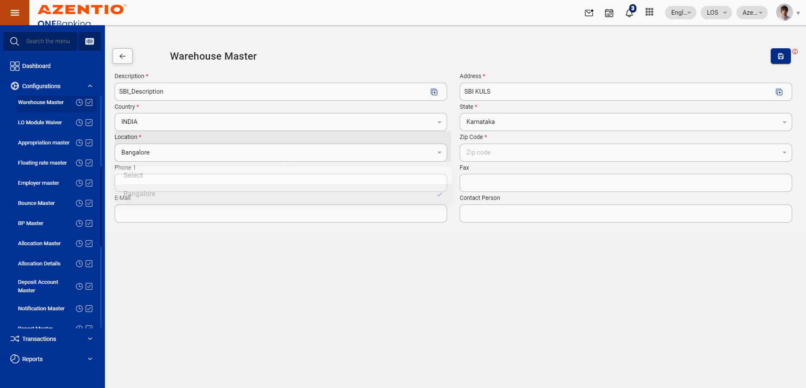And user Enter the value in Zip code field and verify itstepdefinitions.HooksClass.addScreenshot(io.cucumber.java.Scenario)screenshot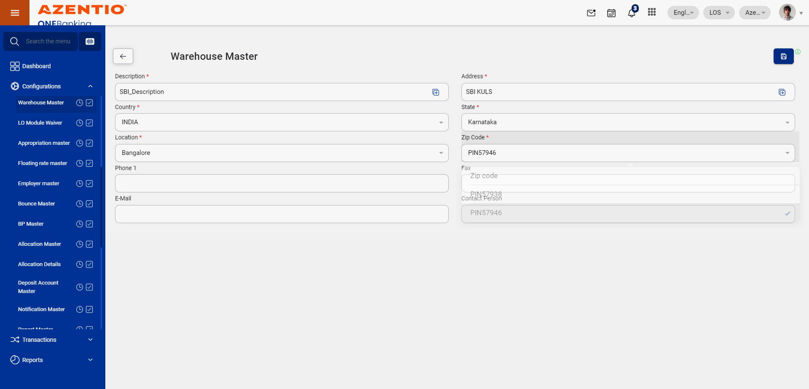And user Enter the value in Phone field and verify itstepdefinitions.HooksClass.addScreenshot(io.cucumber.java.Scenario)screenshot
And user Enter the value in country field and verify itstepdefinitions.HooksClass.addScreenshot(io.cucumber.java.Scenario)screenshotAnd user Enter the value in state field and verify itstepdefinitions.HooksClass.addScreenshot(io.cucumber.java.Scenario)screenshotAnd user Enter the value in Location field and verify itstepdefinitions.HooksClass.addScreenshot(io.cucumber.java.Scenario)screenshot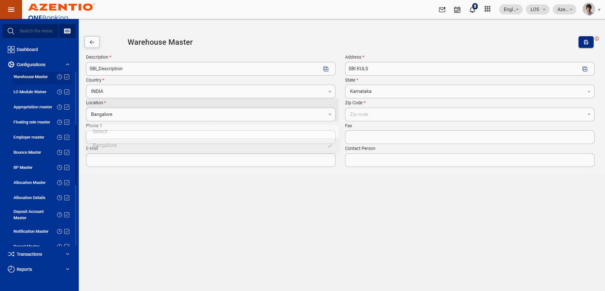And user Enter the value in Zip code field and verify itstepdefinitions.HooksClass.addScreenshot(io.cucumber.java.Scenario)screenshot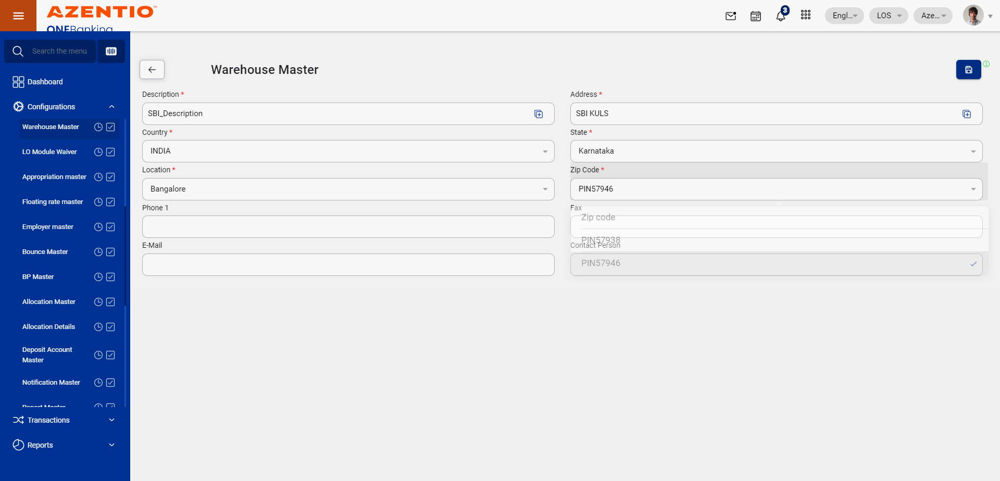And user Enter the value in Phone field and verify itstepdefinitions.HooksClass.addScreenshot(io.cucumber.java.Scenario)screenshot And user Enter the value in Fax field and verify itstepdefinitions.HooksClass.addScreenshot(io.cucumber.java.Scenario)screenshot
And user Enter the value in Fax field and verify itstepdefinitions.HooksClass.addScreenshot(io.cucumber.java.Scenario)screenshot And user Enter the value in Email field and verify itstepdefinitions.HooksClass.addScreenshot(io.cucumber.java.Scenario)screenshot
And user Enter the value in Email field and verify itstepdefinitions.HooksClass.addScreenshot(io.cucumber.java.Scenario)screenshot And user Enter the value in Contact person field and verify itstepdefinitions.HooksClass.addScreenshot(io.cucumber.java.Scenario)screenshot
And user Enter the value in Contact person field and verify itstepdefinitions.HooksClass.addScreenshot(io.cucumber.java.Scenario)screenshot And user save the warehouse master Recordstepdefinitions.HooksClass.addScreenshot(io.cucumber.java.Scenario)screenshot
And user save the warehouse master Recordstepdefinitions.HooksClass.addScreenshot(io.cucumber.java.Scenario)screenshot And user goto the Maker Inbox and store the Referance IDstepdefinitions.HooksClass.addScreenshot(io.cucumber.java.Scenario)screenshot
And user goto the Maker Inbox and store the Referance IDstepdefinitions.HooksClass.addScreenshot(io.cucumber.java.Scenario)screenshot Then user Click on Action Iconstepdefinitions.HooksClass.addScreenshot(io.cucumber.java.Scenario)screenshot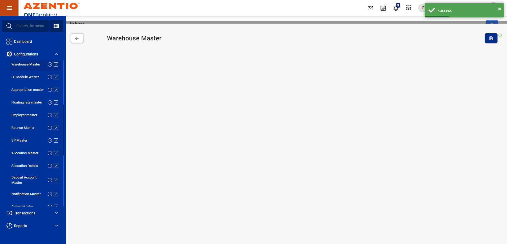And user verify the submit button and submit the Record from Maker stagestepdefinitions.HooksClass.addScreenshot(io.cucumber.java.Scenario)screenshot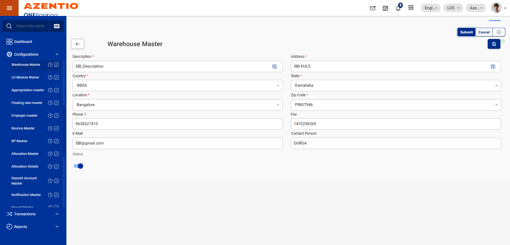Failverify Checker user is able to Approve the recordGiven user log in as uls application checkerstepdefinitions.HooksClass.addScreenshot(io.cucumber.java.Scenario)screenshotAnd user Click on Checker Mailbox iconstepdefinitions.HooksClass.addScreenshot(io.cucumber.java.Scenario)screenshot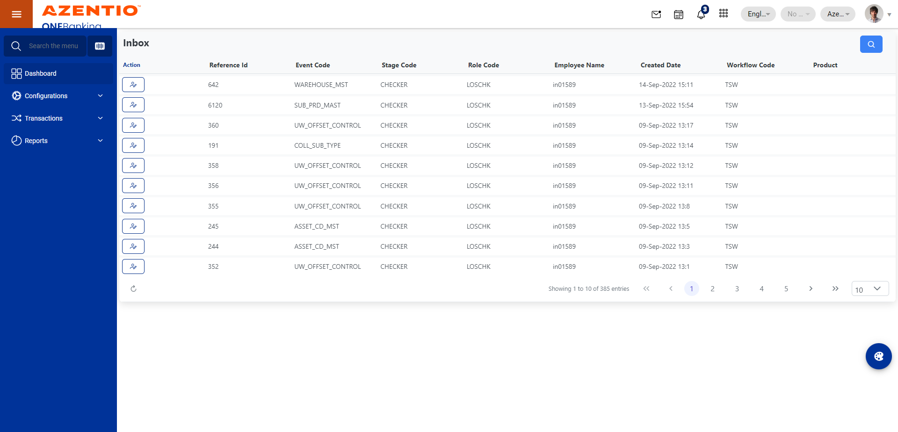And user Search the respective reference id and click on Action buttonstepdefinitions.HooksClass.addScreenshot(io.cucumber.java.Scenario)screenshot
Then user Click on Action Iconstepdefinitions.HooksClass.addScreenshot(io.cucumber.java.Scenario)screenshot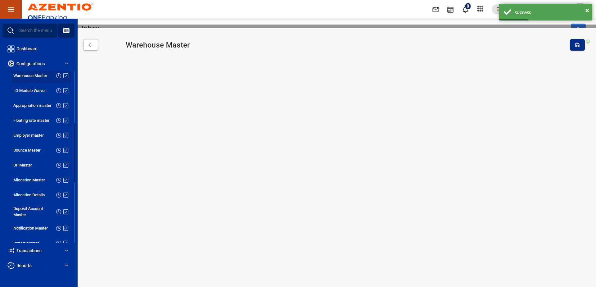And user verify the submit button and submit the Record from Maker stagestepdefinitions.HooksClass.addScreenshot(io.cucumber.java.Scenario)screenshot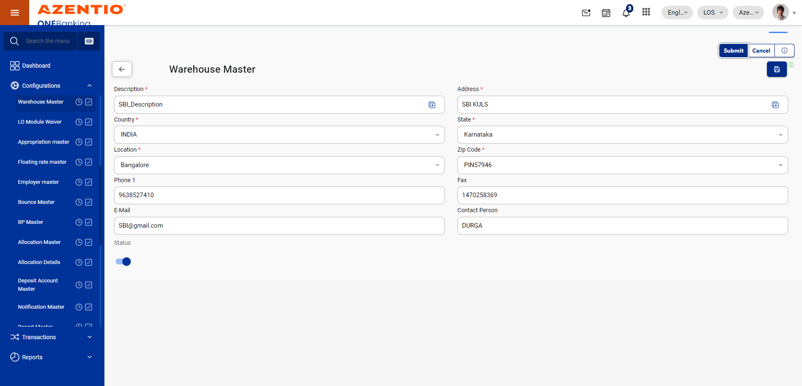Failverify Checker user is able to Approve the recordGiven user log in as uls application checkerstepdefinitions.HooksClass.addScreenshot(io.cucumber.java.Scenario)screenshotAnd user Click on Checker Mailbox iconstepdefinitions.HooksClass.addScreenshot(io.cucumber.java.Scenario)screenshot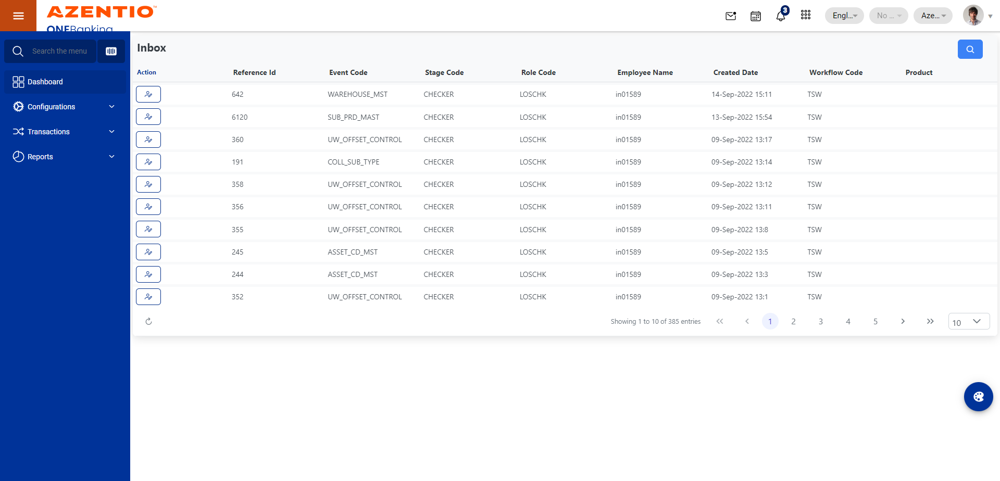And user Search the respective reference id and click on Action buttonstepdefinitions.HooksClass.addScreenshot(io.cucumber.java.Scenario)screenshot And user Click on Approve icon buttonstepdefinitions.HooksClass.addScreenshot(io.cucumber.java.Scenario)screenshot
And user Click on Approve icon buttonstepdefinitions.HooksClass.addScreenshot(io.cucumber.java.Scenario)screenshot And user Enter the remarks in Action confirmation popup screenstepdefinitions.HooksClass.addScreenshot(io.cucumber.java.Scenario)screenshot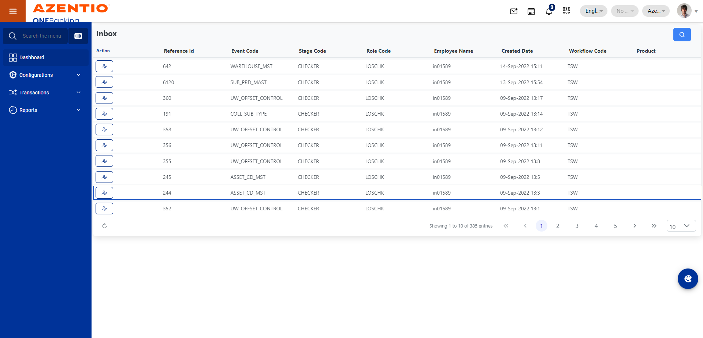Then user Click on Remarks button in Action confirmation popup screenstepdefinitions.HooksClass.addScreenshot(io.cucumber.java.Scenario)screenshotThen user verify the Record got Approved in checker stagestepdefinitions.HooksClass.addScreenshot(io.cucumber.java.Scenario)screenshotPassRecord should get approved and display in the system under Approved List viewGiven user log in as uls application makerstepdefinitions.HooksClass.addScreenshot(io.cucumber.java.Scenario)screenshotThen user click on configurations Tabstepdefinitions.HooksClass.addScreenshot(io.cucumber.java.Scenario)screenshot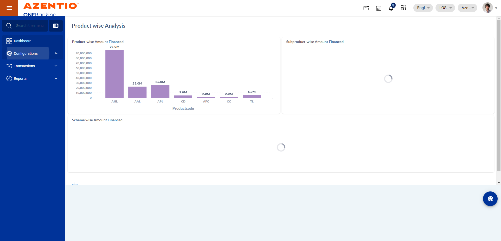When user click Config Manager menustepdefinitions.HooksClass.addScreenshot(io.cucumber.java.Scenario)screenshotAnd user click list view icon of Warehouse Masterstepdefinitions.HooksClass.addScreenshot(io.cucumber.java.Scenario)screenshotThen User validate the WareHouse approved record in list viewstepdefinitions.HooksClass.addScreenshot(io.cucumber.java.Scenario)screenshotFailCreation of Warehouse Master record- Add TemplateGiven user log in as uls application makerstepdefinitions.HooksClass.addScreenshot(io.cucumber.java.Scenario)screenshotThen user click on configurations Tabstepdefinitions.HooksClass.addScreenshot(io.cucumber.java.Scenario)screenshotWhen user click Config Manager menustepdefinitions.HooksClass.addScreenshot(io.cucumber.java.Scenario)screenshotAnd user click list view icon of Warehouse Masterstepdefinitions.HooksClass.addScreenshot(io.cucumber.java.Scenario)screenshotAnd user click on Add icon for Warehouse masterstepdefinitions.HooksClass.addScreenshot(io.cucumber.java.Scenario)screenshot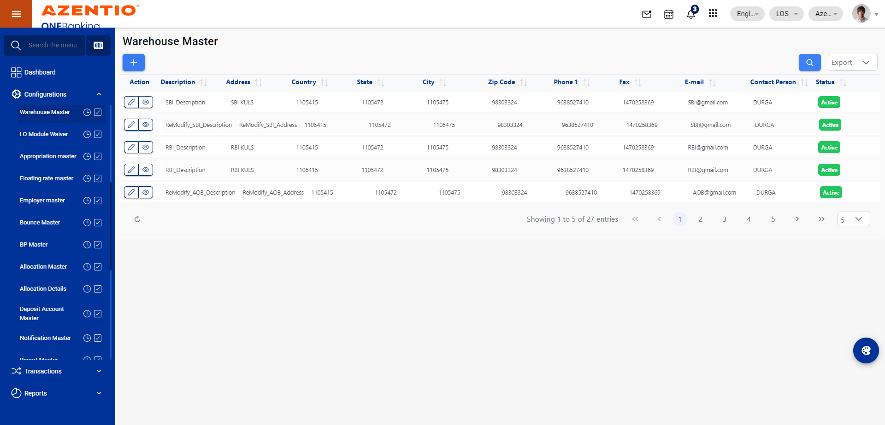And user Enter the value in description and verify itstepdefinitions.HooksClass.addScreenshot(io.cucumber.java.Scenario)screenshot
And user Enter the remarks in Action confirmation popup screenstepdefinitions.HooksClass.addScreenshot(io.cucumber.java.Scenario)screenshot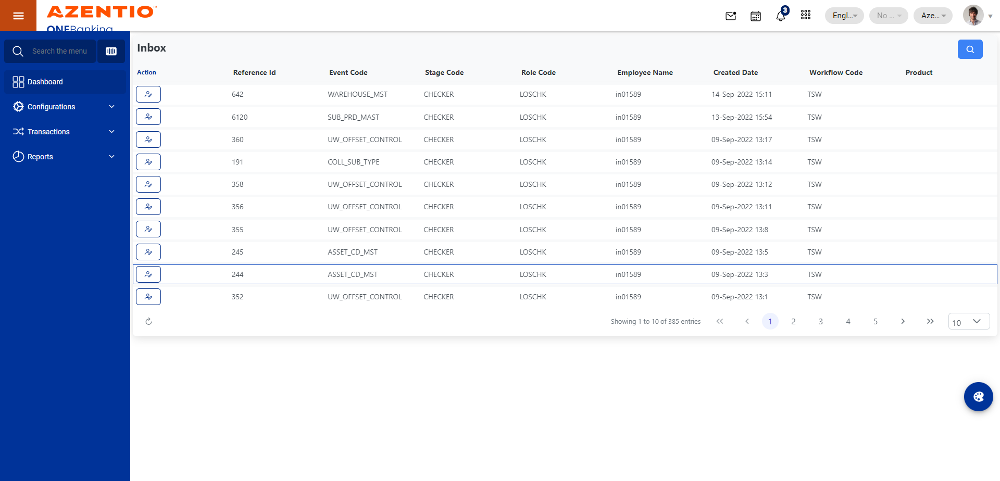Then user Click on Remarks button in Action confirmation popup screenstepdefinitions.HooksClass.addScreenshot(io.cucumber.java.Scenario)screenshotThen user verify the Record got Approved in checker stagestepdefinitions.HooksClass.addScreenshot(io.cucumber.java.Scenario)screenshotPassRecord should get approved and display in the system under Approved List viewGiven user log in as uls application makerstepdefinitions.HooksClass.addScreenshot(io.cucumber.java.Scenario)screenshotThen user click on configurations Tabstepdefinitions.HooksClass.addScreenshot(io.cucumber.java.Scenario)screenshot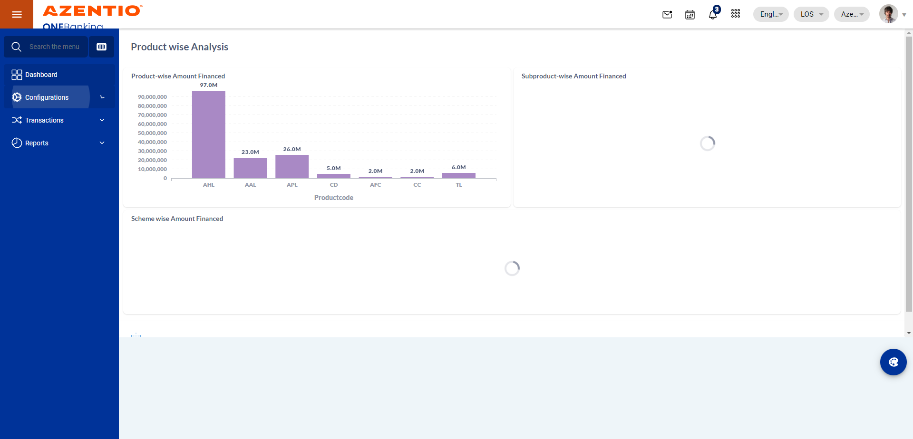When user click Config Manager menustepdefinitions.HooksClass.addScreenshot(io.cucumber.java.Scenario)screenshotAnd user click list view icon of Warehouse Masterstepdefinitions.HooksClass.addScreenshot(io.cucumber.java.Scenario)screenshotThen User validate the WareHouse approved record in list viewstepdefinitions.HooksClass.addScreenshot(io.cucumber.java.Scenario)screenshotFailCreation of Warehouse Master record- Add TemplateGiven user log in as uls application makerstepdefinitions.HooksClass.addScreenshot(io.cucumber.java.Scenario)screenshotThen user click on configurations Tabstepdefinitions.HooksClass.addScreenshot(io.cucumber.java.Scenario)screenshotWhen user click Config Manager menustepdefinitions.HooksClass.addScreenshot(io.cucumber.java.Scenario)screenshotAnd user click list view icon of Warehouse Masterstepdefinitions.HooksClass.addScreenshot(io.cucumber.java.Scenario)screenshotAnd user click on Add icon for Warehouse masterstepdefinitions.HooksClass.addScreenshot(io.cucumber.java.Scenario)screenshot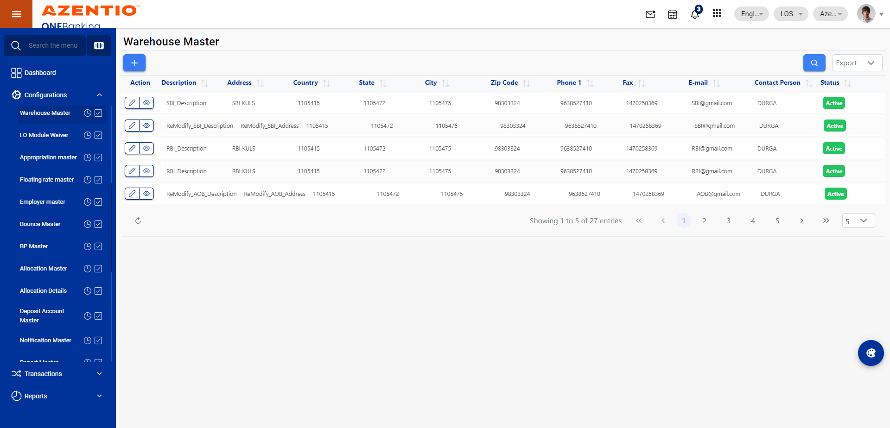And user Enter the value in description and verify itstepdefinitions.HooksClass.addScreenshot(io.cucumber.java.Scenario)screenshot And user Enter the value For Address field and verify itstepdefinitions.HooksClass.addScreenshot(io.cucumber.java.Scenario)screenshotAnd user Enter the value in country field and verify itstepdefinitions.HooksClass.addScreenshot(io.cucumber.java.Scenario)screenshot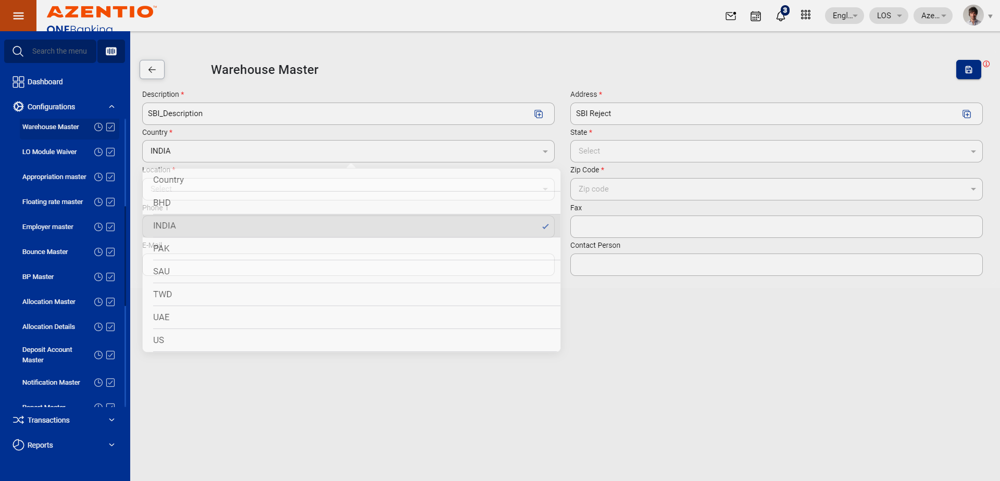And user Enter the value in state field and verify itstepdefinitions.HooksClass.addScreenshot(io.cucumber.java.Scenario)screenshotAnd user Enter the value in Location field and verify itstepdefinitions.HooksClass.addScreenshot(io.cucumber.java.Scenario)screenshotAnd user Enter the value in Zip code field and verify itstepdefinitions.HooksClass.addScreenshot(io.cucumber.java.Scenario)screenshotAnd user Enter the value in Phone field and verify itstepdefinitions.HooksClass.addScreenshot(io.cucumber.java.Scenario)screenshotAnd user Enter the value in Fax field and verify itstepdefinitions.HooksClass.addScreenshot(io.cucumber.java.Scenario)screenshotAnd user Enter the value For Email field and verify itstepdefinitions.HooksClass.addScreenshot(io.cucumber.java.Scenario)screenshotAnd user Enter the value in Contact person field and verify itstepdefinitions.HooksClass.addScreenshot(io.cucumber.java.Scenario)screenshotAnd user save the warehouse master Recordstepdefinitions.HooksClass.addScreenshot(io.cucumber.java.Scenario)screenshot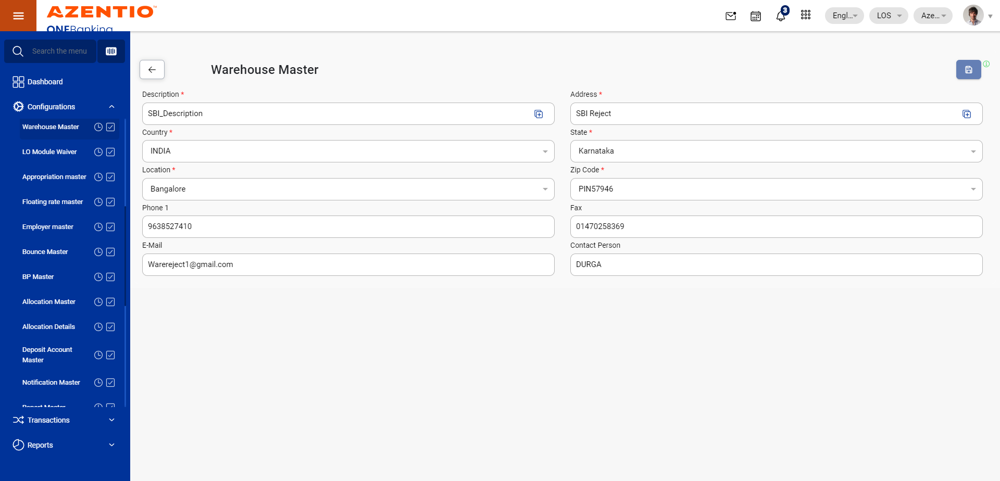And user goto the Maker Inbox and store the Referance IDstepdefinitions.HooksClass.addScreenshot(io.cucumber.java.Scenario)screenshot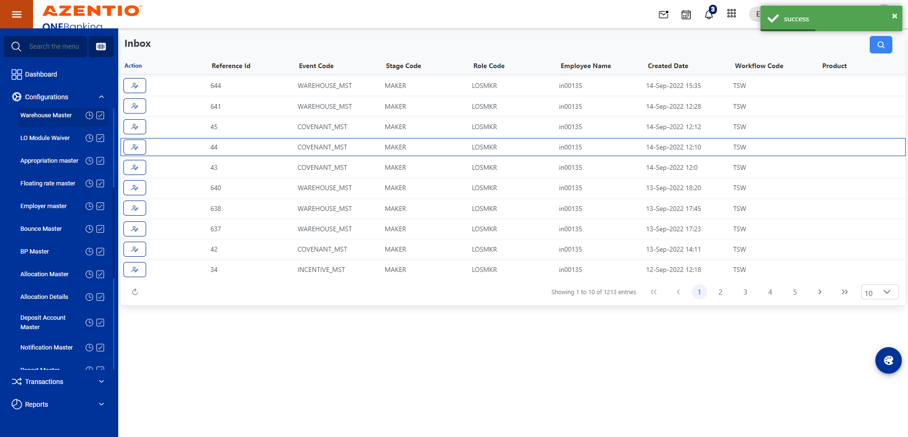Then user Click on Action Iconstepdefinitions.HooksClass.addScreenshot(io.cucumber.java.Scenario)screenshot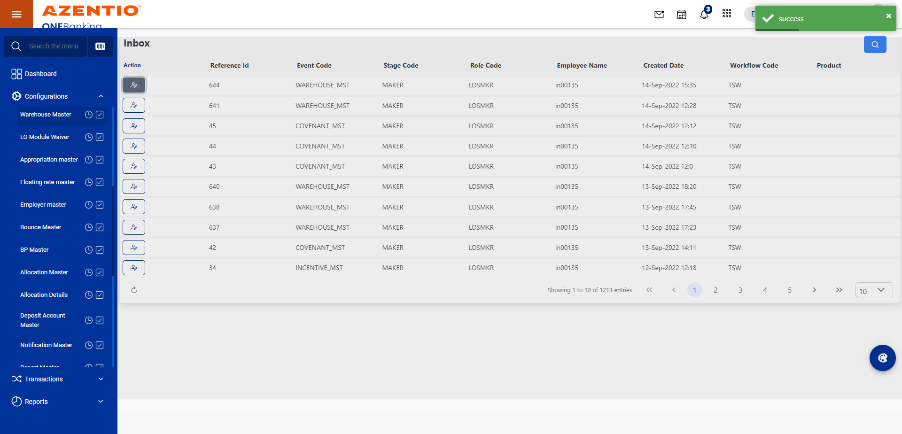And user verify the submit button and submit the Record from Maker stagestepdefinitions.HooksClass.addScreenshot(io.cucumber.java.Scenario)screenshotFailverify Checker user is able to Reject the recordGiven user log in as uls application checkerstepdefinitions.HooksClass.addScreenshot(io.cucumber.java.Scenario)screenshotAnd user Click on Checker Mailbox iconstepdefinitions.HooksClass.addScreenshot(io.cucumber.java.Scenario)screenshotAnd user Search the respective reference id and click on Action buttonstepdefinitions.HooksClass.addScreenshot(io.cucumber.java.Scenario)screenshot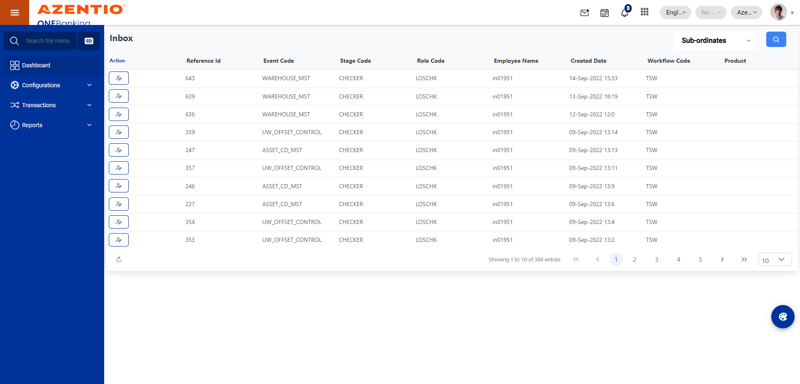And user Click on Reject icon buttonstepdefinitions.HooksClass.addScreenshot(io.cucumber.java.Scenario)screenshotAnd user Enter the remarks for Reject the Record in checkerStep skippedThen user Click on Remarks button for Reject confirmation AlertStep skippedThen user verify the Record got Rejected in checker stageStep skippedPassRecord should get approved and display in the system under Reject List viewGiven user log in as uls application makerstepdefinitions.HooksClass.addScreenshot(io.cucumber.java.Scenario)screenshotThen user click on configurations Tabstepdefinitions.HooksClass.addScreenshot(io.cucumber.java.Scenario)screenshotWhen user click Config Manager menustepdefinitions.HooksClass.addScreenshot(io.cucumber.java.Scenario)screenshotAnd user click list view icon of Warehouse Masterstepdefinitions.HooksClass.addScreenshot(io.cucumber.java.Scenario)screenshotThen User validate the WareHouse Rejected record in list viewstepdefinitions.HooksClass.addScreenshot(io.cucumber.java.Scenario)screenshot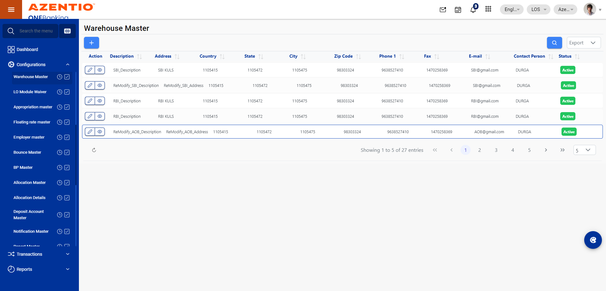FailCreation of Warehouse Master record- Add TemplateGiven user log in as uls application makerstepdefinitions.HooksClass.addScreenshot(io.cucumber.java.Scenario)screenshotThen user click on configurations Tabstepdefinitions.HooksClass.addScreenshot(io.cucumber.java.Scenario)screenshotWhen user click Config Manager menustepdefinitions.HooksClass.addScreenshot(io.cucumber.java.Scenario)screenshotAnd user click list view icon of Warehouse Masterstepdefinitions.HooksClass.addScreenshot(io.cucumber.java.Scenario)screenshotAnd user click on Add icon for Warehouse masterstepdefinitions.HooksClass.addScreenshot(io.cucumber.java.Scenario)screenshot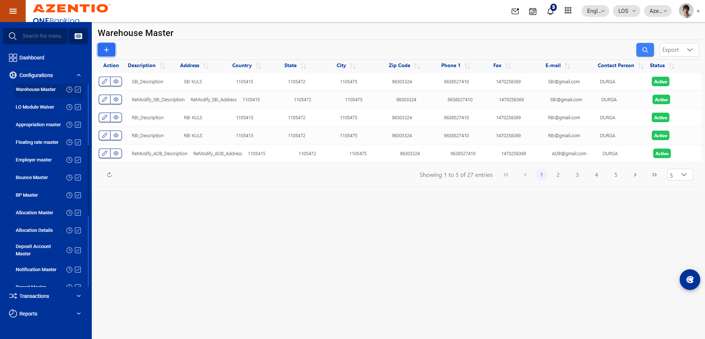And user Enter the value in description and verify itstepdefinitions.HooksClass.addScreenshot(io.cucumber.java.Scenario)screenshotAnd user Enter the value to Address field and verify itstepdefinitions.HooksClass.addScreenshot(io.cucumber.java.Scenario)screenshotAnd user Enter the value in country field and verify itstepdefinitions.HooksClass.addScreenshot(io.cucumber.java.Scenario)screenshotAnd user Enter the value in state field and verify itstepdefinitions.HooksClass.addScreenshot(io.cucumber.java.Scenario)screenshot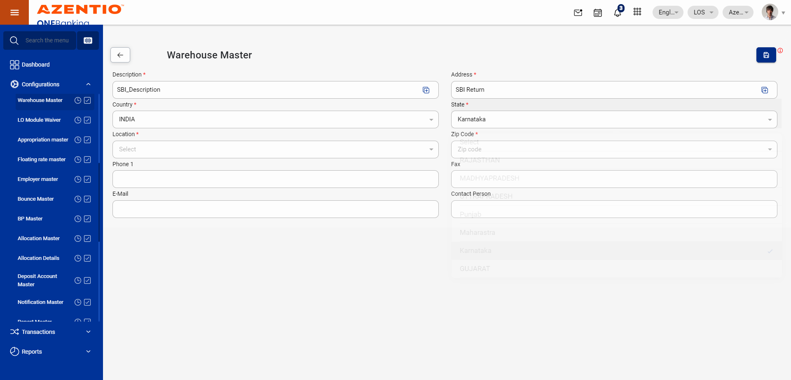And user Enter the value in Location field and verify itstepdefinitions.HooksClass.addScreenshot(io.cucumber.java.Scenario)screenshot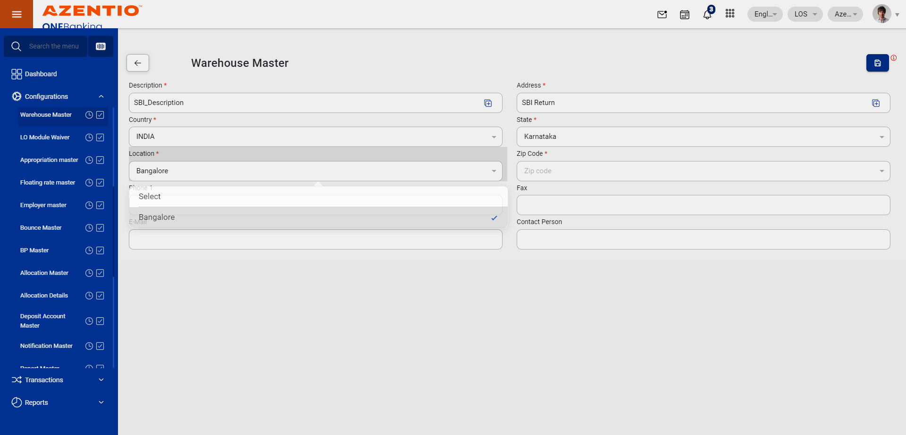And user Enter the value in Zip code field and verify itstepdefinitions.HooksClass.addScreenshot(io.cucumber.java.Scenario)screenshot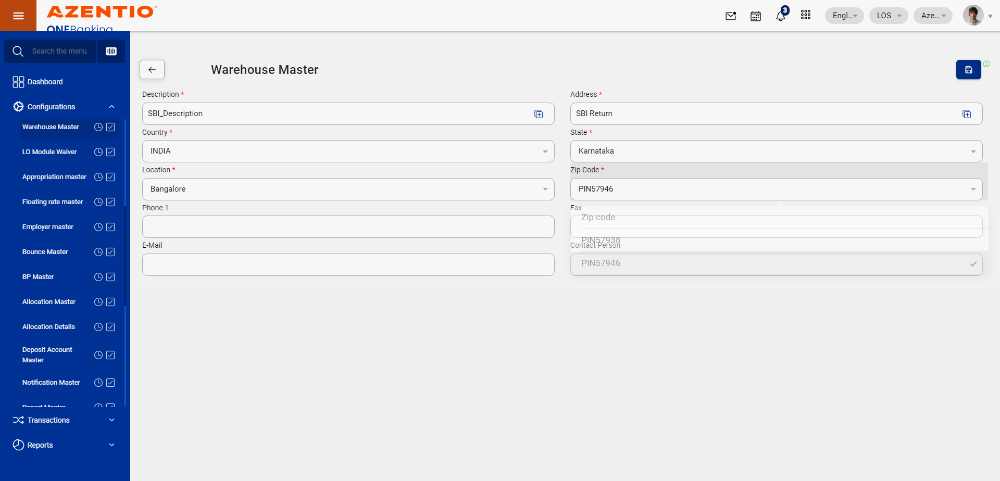And user Enter the value in Phone field and verify itstepdefinitions.HooksClass.addScreenshot(io.cucumber.java.Scenario)screenshotAnd user Enter the value in Fax field and verify itstepdefinitions.HooksClass.addScreenshot(io.cucumber.java.Scenario)screenshotAnd user Enter the value to Email field and verify itstepdefinitions.HooksClass.addScreenshot(io.cucumber.java.Scenario)screenshotAnd user Enter the value in Contact person field and verify itstepdefinitions.HooksClass.addScreenshot(io.cucumber.java.Scenario)screenshotAnd user save the warehouse master Recordstepdefinitions.HooksClass.addScreenshot(io.cucumber.java.Scenario)screenshot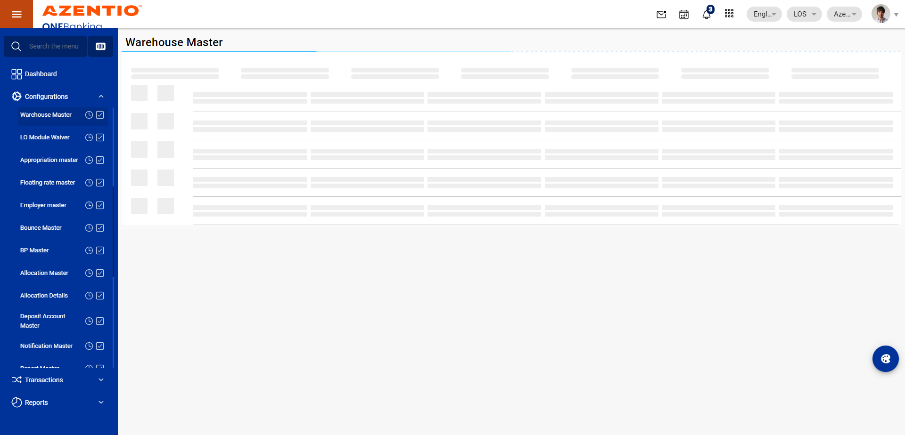And user goto the Maker Inbox and store the Referance IDstepdefinitions.HooksClass.addScreenshot(io.cucumber.java.Scenario)screenshot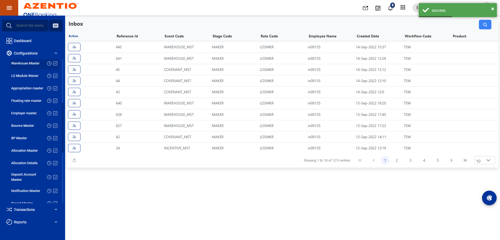Then user Click on Action Iconstepdefinitions.HooksClass.addScreenshot(io.cucumber.java.Scenario)screenshot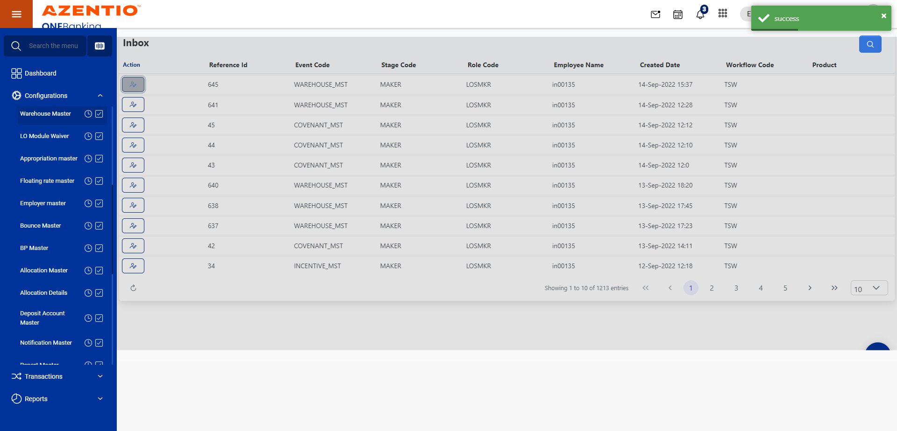And user verify the submit button and submit the Record from Maker stagestepdefinitions.HooksClass.addScreenshot(io.cucumber.java.Scenario)screenshotFailverify Checker user is able to Approve the recordGiven user log in as uls application checkerstepdefinitions.HooksClass.addScreenshot(io.cucumber.java.Scenario)screenshotAnd user Click on Checker Mailbox iconstepdefinitions.HooksClass.addScreenshot(io.cucumber.java.Scenario)screenshot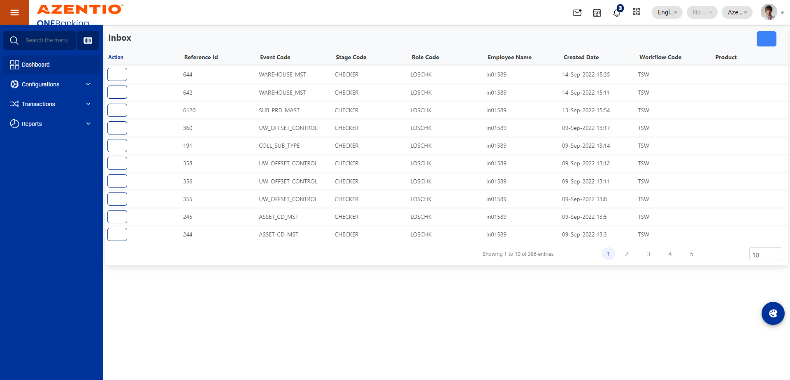And user Search the respective reference id and click on Action buttonstepdefinitions.HooksClass.addScreenshot(io.cucumber.java.Scenario)screenshotAnd user Click on Return icon buttonstepdefinitions.HooksClass.addScreenshot(io.cucumber.java.Scenario)screenshotAnd user Enter the remarks for Return the Record in checkerStep skippedThen user Click on Remarks button for Return confirmation AlertStep skippedThen user verify the Record got Returned in checker stageStep skippedPassRecord should get approved and display in the system under Approved List viewGiven user log in as uls application makerstepdefinitions.HooksClass.addScreenshot(io.cucumber.java.Scenario)screenshotThen user click on configurations Tabstepdefinitions.HooksClass.addScreenshot(io.cucumber.java.Scenario)screenshotWhen user click Config Manager menustepdefinitions.HooksClass.addScreenshot(io.cucumber.java.Scenario)screenshotAnd user click Temp view icon of Warehouse Masterstepdefinitions.HooksClass.addScreenshot(io.cucumber.java.Scenario)screenshot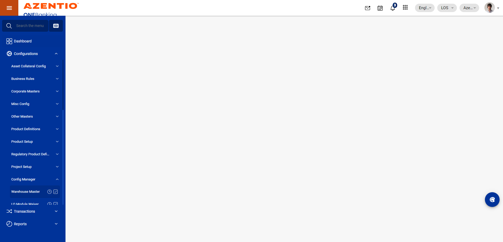Then User validate the WareHouse Retured record in list viewstepdefinitions.HooksClass.addScreenshot(io.cucumber.java.Scenario)screenshot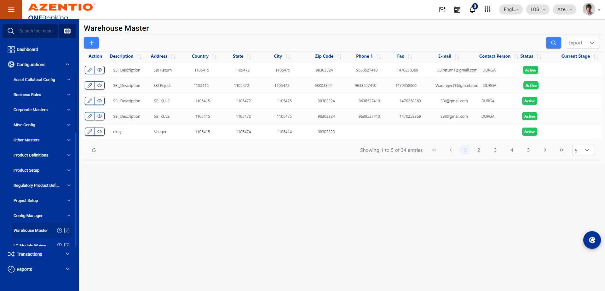PassCreation of Warehouse Master record- Add TemplateGiven user log in as uls application makerstepdefinitions.HooksClass.addScreenshot(io.cucumber.java.Scenario)screenshotThen user click on configurations Tabstepdefinitions.HooksClass.addScreenshot(io.cucumber.java.Scenario)screenshot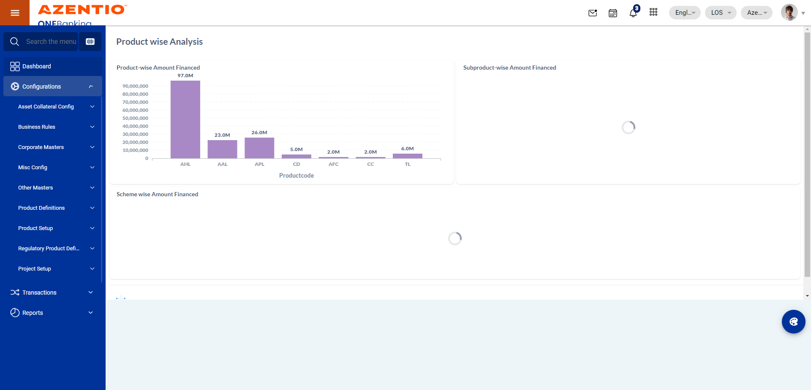When user click Config Manager menustepdefinitions.HooksClass.addScreenshot(io.cucumber.java.Scenario)screenshot
And user Enter the value For Address field and verify itstepdefinitions.HooksClass.addScreenshot(io.cucumber.java.Scenario)screenshotAnd user Enter the value in country field and verify itstepdefinitions.HooksClass.addScreenshot(io.cucumber.java.Scenario)screenshot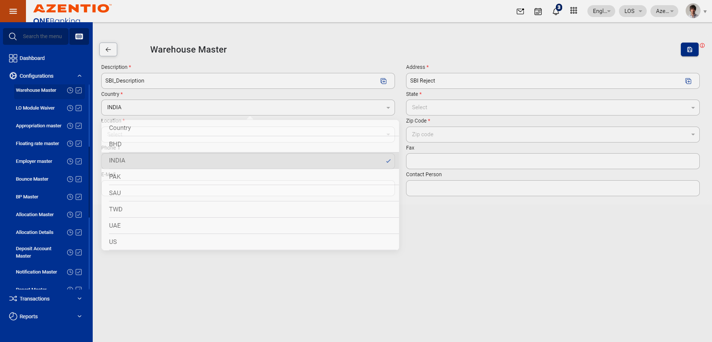And user Enter the value in state field and verify itstepdefinitions.HooksClass.addScreenshot(io.cucumber.java.Scenario)screenshotAnd user Enter the value in Location field and verify itstepdefinitions.HooksClass.addScreenshot(io.cucumber.java.Scenario)screenshotAnd user Enter the value in Zip code field and verify itstepdefinitions.HooksClass.addScreenshot(io.cucumber.java.Scenario)screenshotAnd user Enter the value in Phone field and verify itstepdefinitions.HooksClass.addScreenshot(io.cucumber.java.Scenario)screenshotAnd user Enter the value in Fax field and verify itstepdefinitions.HooksClass.addScreenshot(io.cucumber.java.Scenario)screenshotAnd user Enter the value For Email field and verify itstepdefinitions.HooksClass.addScreenshot(io.cucumber.java.Scenario)screenshotAnd user Enter the value in Contact person field and verify itstepdefinitions.HooksClass.addScreenshot(io.cucumber.java.Scenario)screenshotAnd user save the warehouse master Recordstepdefinitions.HooksClass.addScreenshot(io.cucumber.java.Scenario)screenshot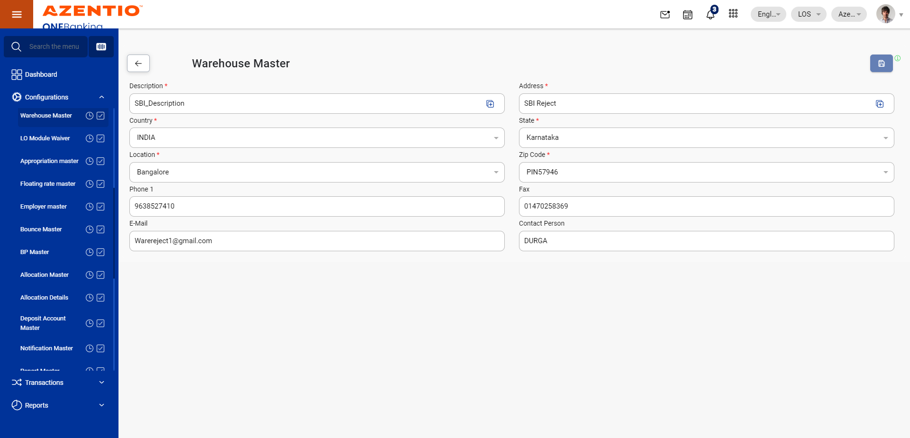And user goto the Maker Inbox and store the Referance IDstepdefinitions.HooksClass.addScreenshot(io.cucumber.java.Scenario)screenshot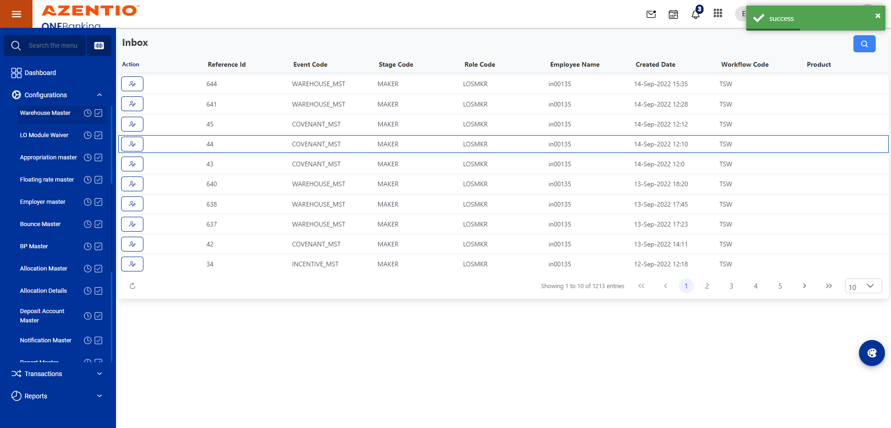Then user Click on Action Iconstepdefinitions.HooksClass.addScreenshot(io.cucumber.java.Scenario)screenshot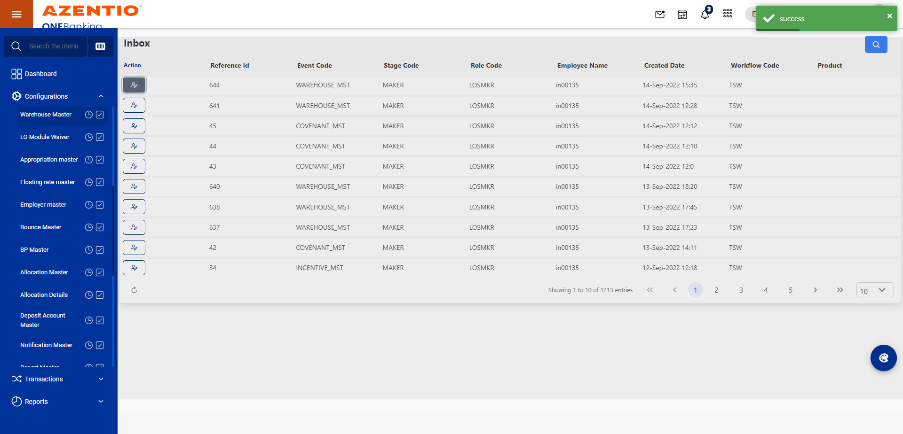And user verify the submit button and submit the Record from Maker stagestepdefinitions.HooksClass.addScreenshot(io.cucumber.java.Scenario)screenshotFailverify Checker user is able to Reject the recordGiven user log in as uls application checkerstepdefinitions.HooksClass.addScreenshot(io.cucumber.java.Scenario)screenshotAnd user Click on Checker Mailbox iconstepdefinitions.HooksClass.addScreenshot(io.cucumber.java.Scenario)screenshotAnd user Search the respective reference id and click on Action buttonstepdefinitions.HooksClass.addScreenshot(io.cucumber.java.Scenario)screenshot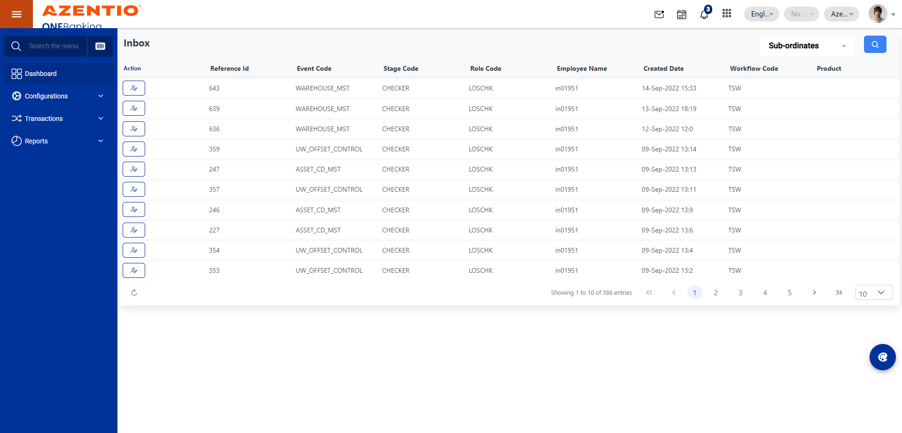And user Click on Reject icon buttonstepdefinitions.HooksClass.addScreenshot(io.cucumber.java.Scenario)screenshotAnd user Enter the remarks for Reject the Record in checkerStep skippedThen user Click on Remarks button for Reject confirmation AlertStep skippedThen user verify the Record got Rejected in checker stageStep skippedPassRecord should get approved and display in the system under Reject List viewGiven user log in as uls application makerstepdefinitions.HooksClass.addScreenshot(io.cucumber.java.Scenario)screenshotThen user click on configurations Tabstepdefinitions.HooksClass.addScreenshot(io.cucumber.java.Scenario)screenshotWhen user click Config Manager menustepdefinitions.HooksClass.addScreenshot(io.cucumber.java.Scenario)screenshotAnd user click list view icon of Warehouse Masterstepdefinitions.HooksClass.addScreenshot(io.cucumber.java.Scenario)screenshotThen User validate the WareHouse Rejected record in list viewstepdefinitions.HooksClass.addScreenshot(io.cucumber.java.Scenario)screenshot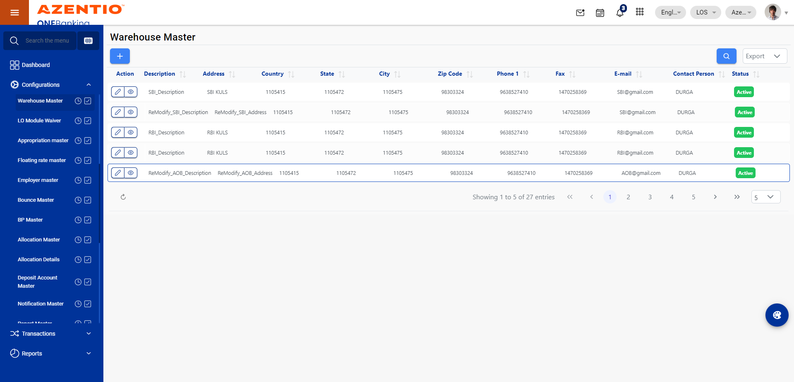FailCreation of Warehouse Master record- Add TemplateGiven user log in as uls application makerstepdefinitions.HooksClass.addScreenshot(io.cucumber.java.Scenario)screenshotThen user click on configurations Tabstepdefinitions.HooksClass.addScreenshot(io.cucumber.java.Scenario)screenshotWhen user click Config Manager menustepdefinitions.HooksClass.addScreenshot(io.cucumber.java.Scenario)screenshotAnd user click list view icon of Warehouse Masterstepdefinitions.HooksClass.addScreenshot(io.cucumber.java.Scenario)screenshotAnd user click on Add icon for Warehouse masterstepdefinitions.HooksClass.addScreenshot(io.cucumber.java.Scenario)screenshot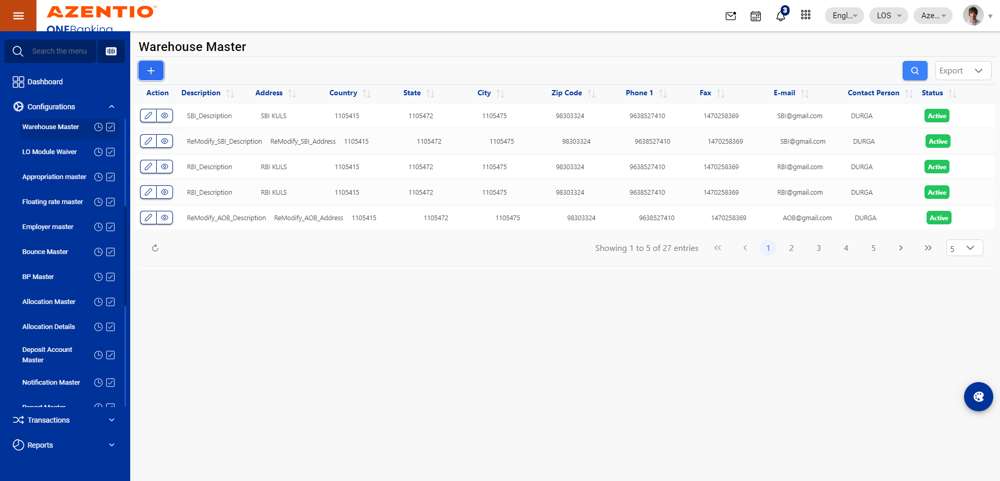And user Enter the value in description and verify itstepdefinitions.HooksClass.addScreenshot(io.cucumber.java.Scenario)screenshotAnd user Enter the value to Address field and verify itstepdefinitions.HooksClass.addScreenshot(io.cucumber.java.Scenario)screenshotAnd user Enter the value in country field and verify itstepdefinitions.HooksClass.addScreenshot(io.cucumber.java.Scenario)screenshotAnd user Enter the value in state field and verify itstepdefinitions.HooksClass.addScreenshot(io.cucumber.java.Scenario)screenshot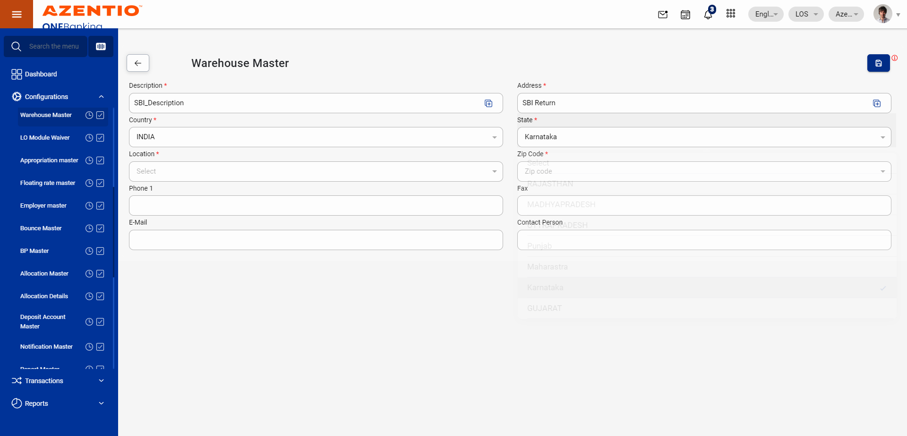And user Enter the value in Location field and verify itstepdefinitions.HooksClass.addScreenshot(io.cucumber.java.Scenario)screenshot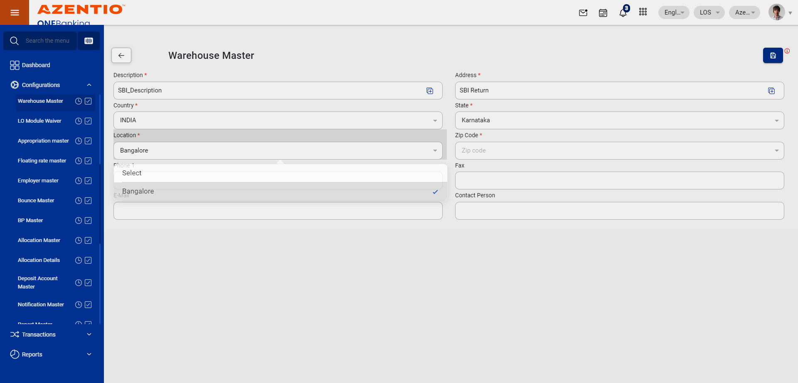And user Enter the value in Zip code field and verify itstepdefinitions.HooksClass.addScreenshot(io.cucumber.java.Scenario)screenshot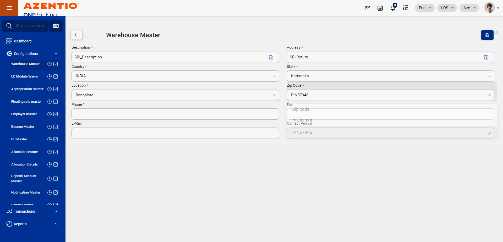And user Enter the value in Phone field and verify itstepdefinitions.HooksClass.addScreenshot(io.cucumber.java.Scenario)screenshotAnd user Enter the value in Fax field and verify itstepdefinitions.HooksClass.addScreenshot(io.cucumber.java.Scenario)screenshotAnd user Enter the value to Email field and verify itstepdefinitions.HooksClass.addScreenshot(io.cucumber.java.Scenario)screenshotAnd user Enter the value in Contact person field and verify itstepdefinitions.HooksClass.addScreenshot(io.cucumber.java.Scenario)screenshotAnd user save the warehouse master Recordstepdefinitions.HooksClass.addScreenshot(io.cucumber.java.Scenario)screenshot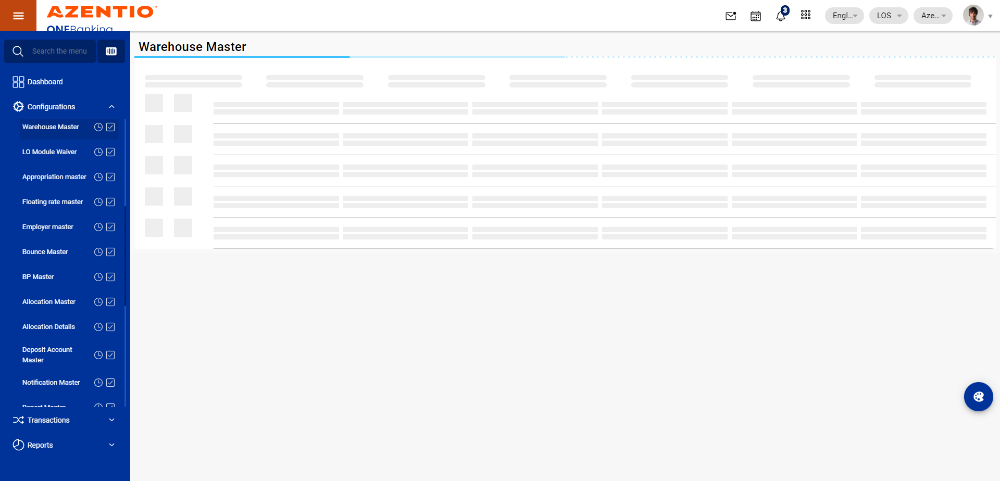And user goto the Maker Inbox and store the Referance IDstepdefinitions.HooksClass.addScreenshot(io.cucumber.java.Scenario)screenshot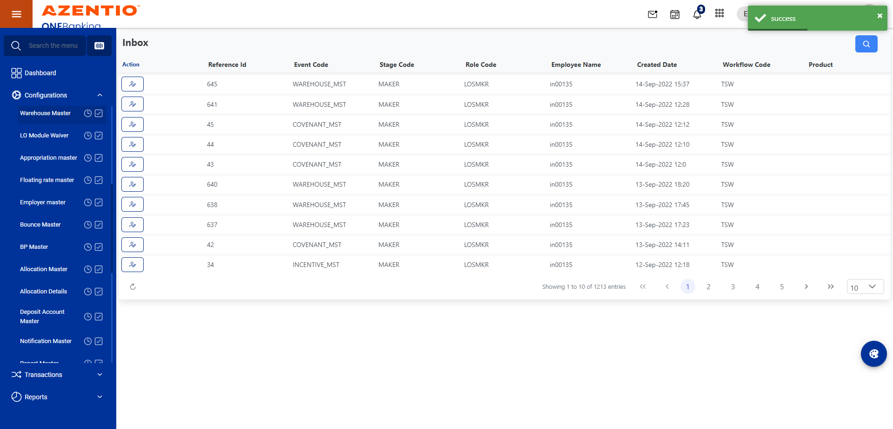Then user Click on Action Iconstepdefinitions.HooksClass.addScreenshot(io.cucumber.java.Scenario)screenshot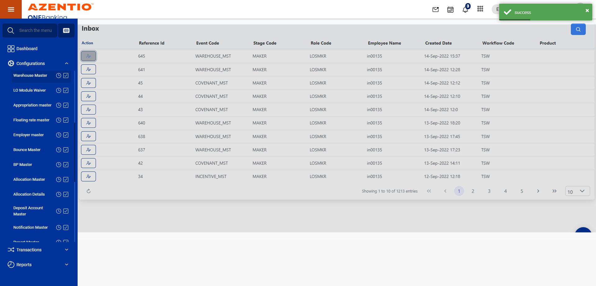And user verify the submit button and submit the Record from Maker stagestepdefinitions.HooksClass.addScreenshot(io.cucumber.java.Scenario)screenshotFailverify Checker user is able to Approve the recordGiven user log in as uls application checkerstepdefinitions.HooksClass.addScreenshot(io.cucumber.java.Scenario)screenshotAnd user Click on Checker Mailbox iconstepdefinitions.HooksClass.addScreenshot(io.cucumber.java.Scenario)screenshot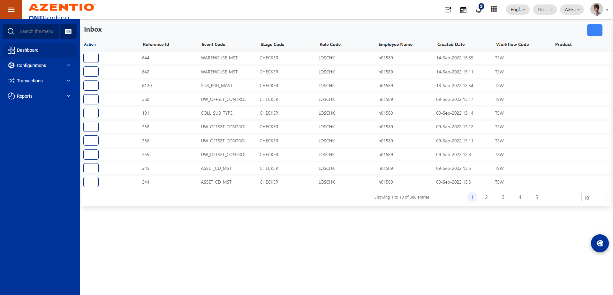And user Search the respective reference id and click on Action buttonstepdefinitions.HooksClass.addScreenshot(io.cucumber.java.Scenario)screenshotAnd user Click on Return icon buttonstepdefinitions.HooksClass.addScreenshot(io.cucumber.java.Scenario)screenshotAnd user Enter the remarks for Return the Record in checkerStep skippedThen user Click on Remarks button for Return confirmation AlertStep skippedThen user verify the Record got Returned in checker stageStep skippedPassRecord should get approved and display in the system under Approved List viewGiven user log in as uls application makerstepdefinitions.HooksClass.addScreenshot(io.cucumber.java.Scenario)screenshotThen user click on configurations Tabstepdefinitions.HooksClass.addScreenshot(io.cucumber.java.Scenario)screenshotWhen user click Config Manager menustepdefinitions.HooksClass.addScreenshot(io.cucumber.java.Scenario)screenshotAnd user click Temp view icon of Warehouse Masterstepdefinitions.HooksClass.addScreenshot(io.cucumber.java.Scenario)screenshot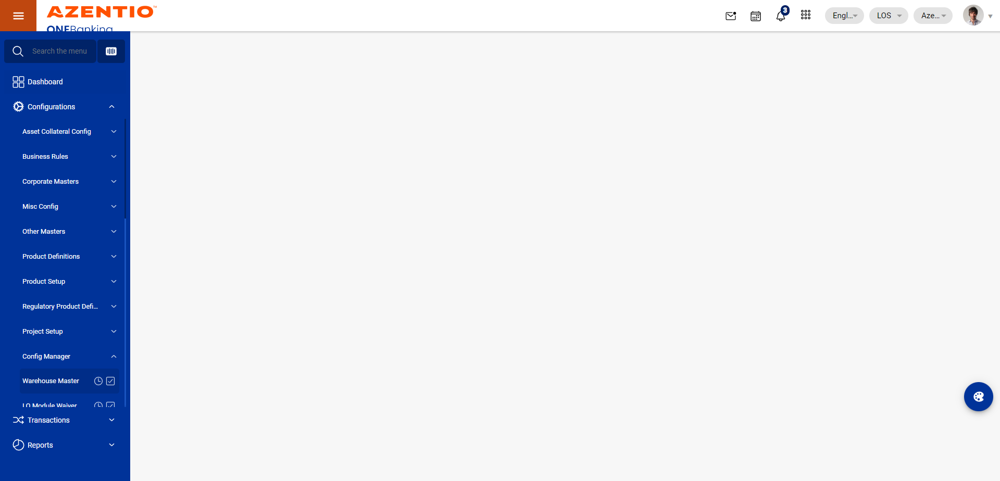Then User validate the WareHouse Retured record in list viewstepdefinitions.HooksClass.addScreenshot(io.cucumber.java.Scenario)screenshot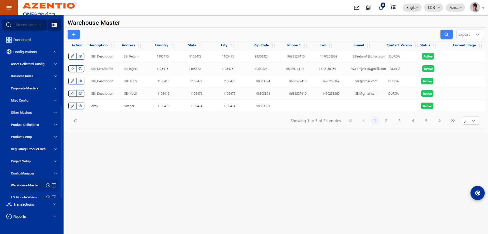PassCreation of Warehouse Master record- Add TemplateGiven user log in as uls application makerstepdefinitions.HooksClass.addScreenshot(io.cucumber.java.Scenario)screenshotThen user click on configurations Tabstepdefinitions.HooksClass.addScreenshot(io.cucumber.java.Scenario)screenshot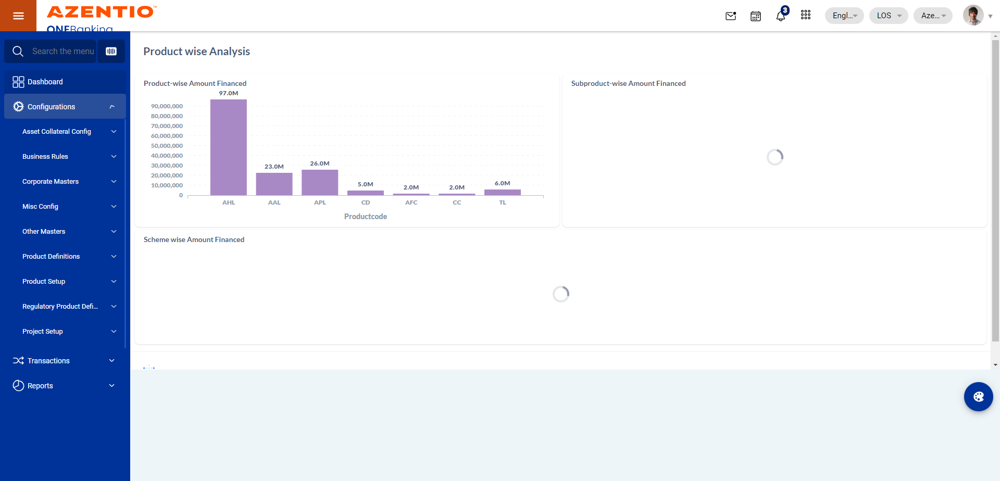When user click Config Manager menustepdefinitions.HooksClass.addScreenshot(io.cucumber.java.Scenario)screenshot And user click list view icon of Warehouse Masterstepdefinitions.HooksClass.addScreenshot(io.cucumber.java.Scenario)screenshot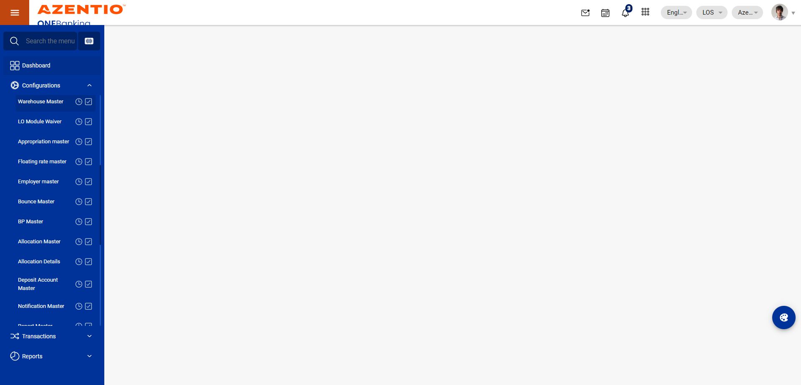And user click on Add icon for Warehouse masterstepdefinitions.HooksClass.addScreenshot(io.cucumber.java.Scenario)screenshotAnd user Enter characters in numeric fieldstepdefinitions.HooksClass.addScreenshot(io.cucumber.java.Scenario)screenshotAnd user save the warehouse master Recordstepdefinitions.HooksClass.addScreenshot(io.cucumber.java.Scenario)screenshot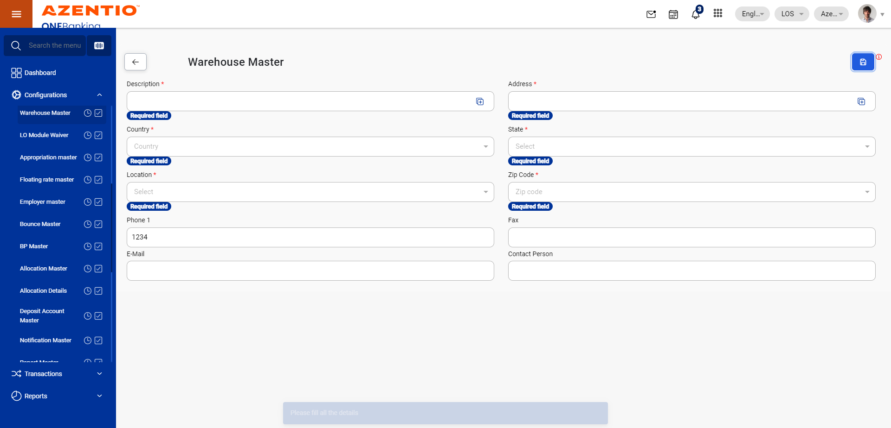And user verify the validation Message in warehouse Masterstepdefinitions.HooksClass.addScreenshot(io.cucumber.java.Scenario)screenshot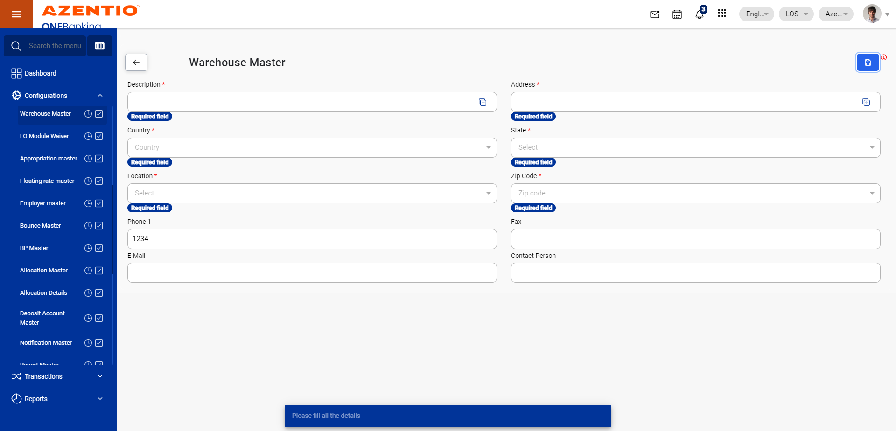FailModification of Warehouse Master recordGiven user log in as uls application makerstepdefinitions.HooksClass.addScreenshot(io.cucumber.java.Scenario)screenshotThen user click on configurations Tabstepdefinitions.HooksClass.addScreenshot(io.cucumber.java.Scenario)screenshot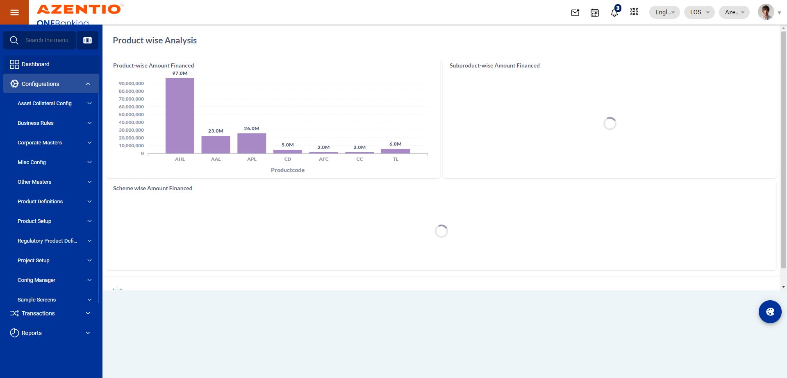When user click Config Manager menustepdefinitions.HooksClass.addScreenshot(io.cucumber.java.Scenario)screenshot
And user click list view icon of Warehouse Masterstepdefinitions.HooksClass.addScreenshot(io.cucumber.java.Scenario)screenshot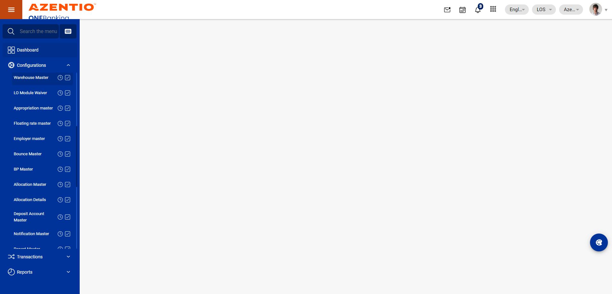And user click on Add icon for Warehouse masterstepdefinitions.HooksClass.addScreenshot(io.cucumber.java.Scenario)screenshotAnd user Enter characters in numeric fieldstepdefinitions.HooksClass.addScreenshot(io.cucumber.java.Scenario)screenshotAnd user save the warehouse master Recordstepdefinitions.HooksClass.addScreenshot(io.cucumber.java.Scenario)screenshot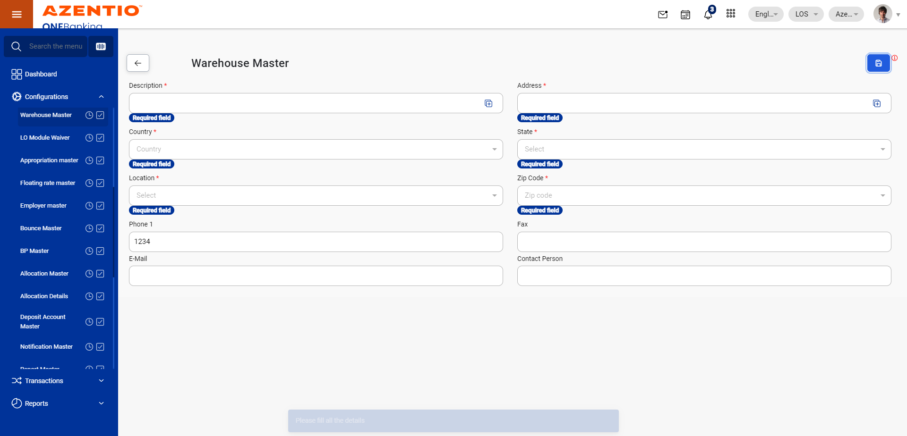And user verify the validation Message in warehouse Masterstepdefinitions.HooksClass.addScreenshot(io.cucumber.java.Scenario)screenshot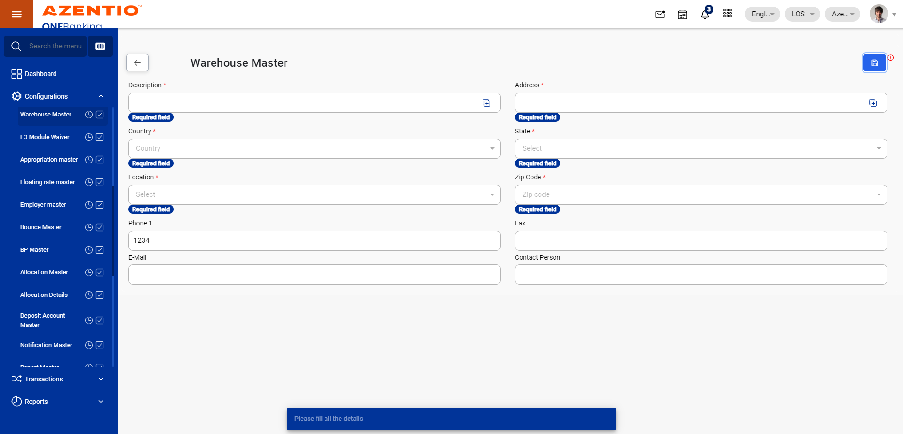FailModification of Warehouse Master recordGiven user log in as uls application makerstepdefinitions.HooksClass.addScreenshot(io.cucumber.java.Scenario)screenshotThen user click on configurations Tabstepdefinitions.HooksClass.addScreenshot(io.cucumber.java.Scenario)screenshot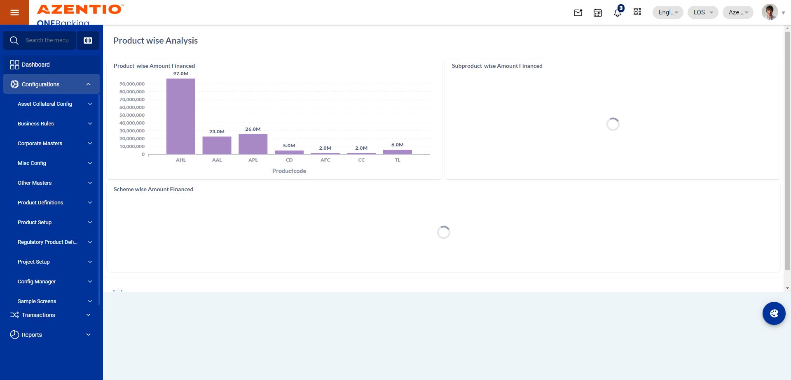When user click Config Manager menustepdefinitions.HooksClass.addScreenshot(io.cucumber.java.Scenario)screenshot And user click list view icon of Warehouse Masterstepdefinitions.HooksClass.addScreenshot(io.cucumber.java.Scenario)screenshotAnd user click on Add icon for Warehouse masterstepdefinitions.HooksClass.addScreenshot(io.cucumber.java.Scenario)screenshotAnd user Enter the value in description and verify itstepdefinitions.HooksClass.addScreenshot(io.cucumber.java.Scenario)screenshot
And user click list view icon of Warehouse Masterstepdefinitions.HooksClass.addScreenshot(io.cucumber.java.Scenario)screenshotAnd user click on Add icon for Warehouse masterstepdefinitions.HooksClass.addScreenshot(io.cucumber.java.Scenario)screenshotAnd user Enter the value in description and verify itstepdefinitions.HooksClass.addScreenshot(io.cucumber.java.Scenario)screenshot And user Enter the value in Address field and verify itstepdefinitions.HooksClass.addScreenshot(io.cucumber.java.Scenario)screenshotAnd user Enter the value in country field and verify itstepdefinitions.HooksClass.addScreenshot(io.cucumber.java.Scenario)screenshotAnd user Enter the value in state field and verify itstepdefinitions.HooksClass.addScreenshot(io.cucumber.java.Scenario)screenshotAnd user Enter the value in Location field and verify itstepdefinitions.HooksClass.addScreenshot(io.cucumber.java.Scenario)screenshotAnd user Enter the value in Zip code field and verify itstepdefinitions.HooksClass.addScreenshot(io.cucumber.java.Scenario)screenshotAnd user Enter the value in Phone field and verify itstepdefinitions.HooksClass.addScreenshot(io.cucumber.java.Scenario)screenshot
And user Enter the value in Address field and verify itstepdefinitions.HooksClass.addScreenshot(io.cucumber.java.Scenario)screenshotAnd user Enter the value in country field and verify itstepdefinitions.HooksClass.addScreenshot(io.cucumber.java.Scenario)screenshotAnd user Enter the value in state field and verify itstepdefinitions.HooksClass.addScreenshot(io.cucumber.java.Scenario)screenshotAnd user Enter the value in Location field and verify itstepdefinitions.HooksClass.addScreenshot(io.cucumber.java.Scenario)screenshotAnd user Enter the value in Zip code field and verify itstepdefinitions.HooksClass.addScreenshot(io.cucumber.java.Scenario)screenshotAnd user Enter the value in Phone field and verify itstepdefinitions.HooksClass.addScreenshot(io.cucumber.java.Scenario)screenshot And user Enter the value in Fax field and verify itstepdefinitions.HooksClass.addScreenshot(io.cucumber.java.Scenario)screenshotAnd user Enter the value in Email field and verify itstepdefinitions.HooksClass.addScreenshot(io.cucumber.java.Scenario)screenshotAnd user Enter the value in Contact person field and verify itstepdefinitions.HooksClass.addScreenshot(io.cucumber.java.Scenario)screenshot
And user Enter the value in Fax field and verify itstepdefinitions.HooksClass.addScreenshot(io.cucumber.java.Scenario)screenshotAnd user Enter the value in Email field and verify itstepdefinitions.HooksClass.addScreenshot(io.cucumber.java.Scenario)screenshotAnd user Enter the value in Contact person field and verify itstepdefinitions.HooksClass.addScreenshot(io.cucumber.java.Scenario)screenshot And user save the warehouse master Recordstepdefinitions.HooksClass.addScreenshot(io.cucumber.java.Scenario)screenshot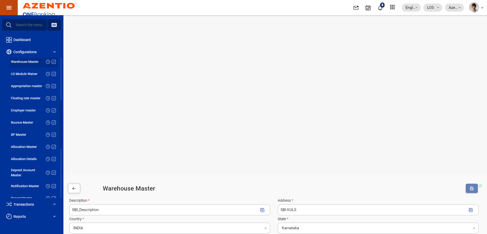And user click Temp view icon of Warehouse Masterstepdefinitions.HooksClass.addScreenshot(io.cucumber.java.Scenario)screenshot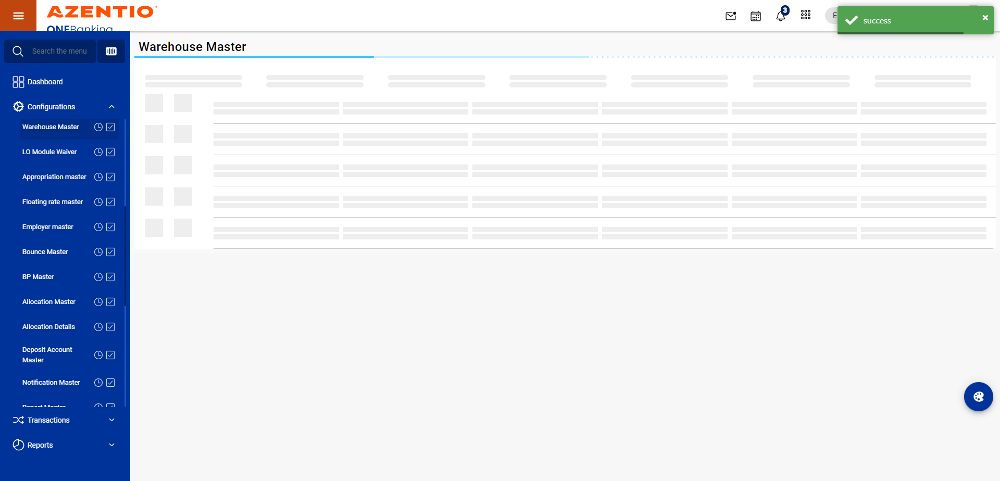And user click on First Record Edit iconstepdefinitions.HooksClass.addScreenshot(io.cucumber.java.Scenario)screenshotAnd user Enter the value in description and Modify itstepdefinitions.HooksClass.addScreenshot(io.cucumber.java.Scenario)screenshot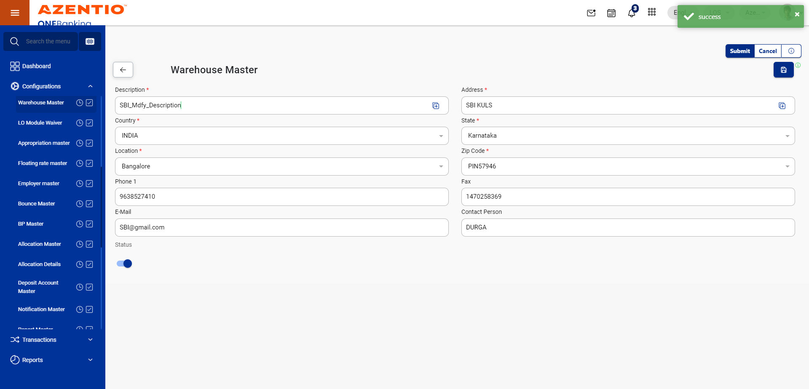And user Enter the value in Address field and Modify itstepdefinitions.HooksClass.addScreenshot(io.cucumber.java.Scenario)screenshotAnd user click on the update buttonstepdefinitions.HooksClass.addScreenshot(io.cucumber.java.Scenario)screenshot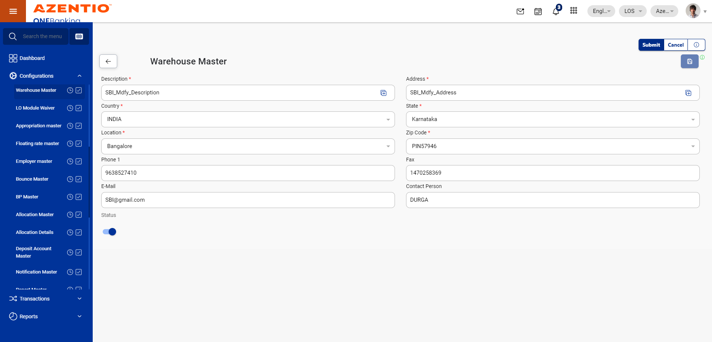And user click list view icon of Warehouse Masterstepdefinitions.HooksClass.addScreenshot(io.cucumber.java.Scenario)screenshotAnd user click on First Record Edit iconstepdefinitions.HooksClass.addScreenshot(io.cucumber.java.Scenario)screenshot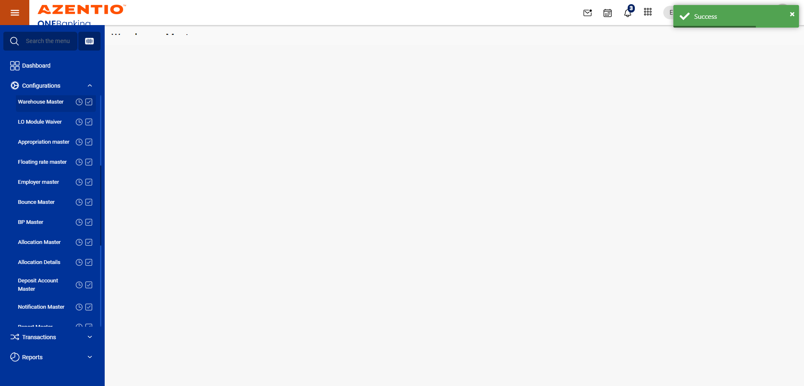And user Enter the value in description and ReModify itstepdefinitions.HooksClass.addScreenshot(io.cucumber.java.Scenario)screenshot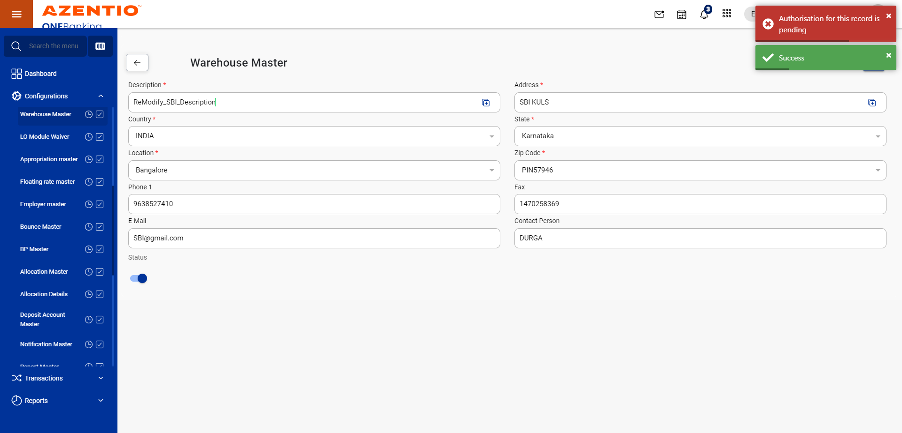And user Enter the value in Address field and ReModify itstepdefinitions.HooksClass.addScreenshot(io.cucumber.java.Scenario)screenshot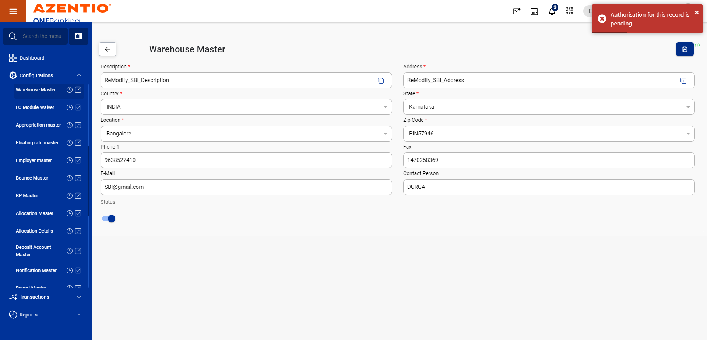And user click on the update buttonstepdefinitions.HooksClass.addScreenshot(io.cucumber.java.Scenario)screenshot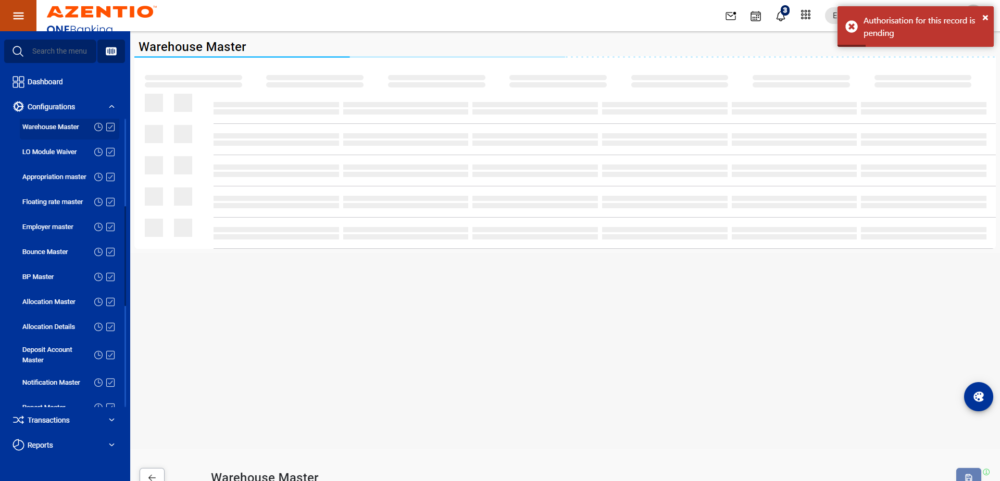And user goto the Maker Inbox and store the Referance IDstepdefinitions.HooksClass.addScreenshot(io.cucumber.java.Scenario)screenshot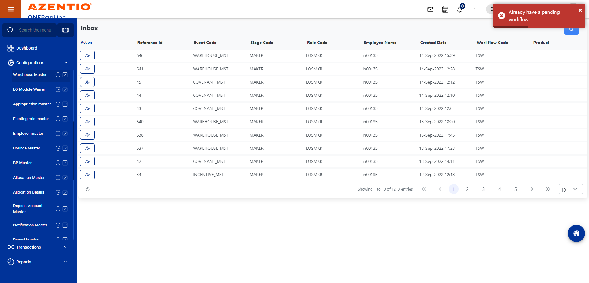Then user Click on Action Iconstepdefinitions.HooksClass.addScreenshot(io.cucumber.java.Scenario)screenshot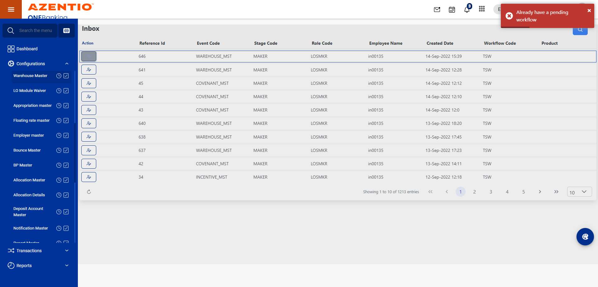And user verify the submit button and submit the Record from Maker stagestepdefinitions.HooksClass.addScreenshot(io.cucumber.java.Scenario)screenshotFailverify Checker user is able to Approve the recordGiven user log in as uls application checkerstepdefinitions.HooksClass.addScreenshot(io.cucumber.java.Scenario)screenshot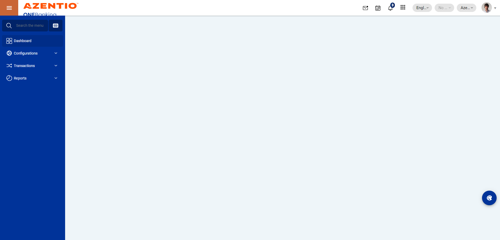And user Click on Checker Mailbox iconstepdefinitions.HooksClass.addScreenshot(io.cucumber.java.Scenario)screenshot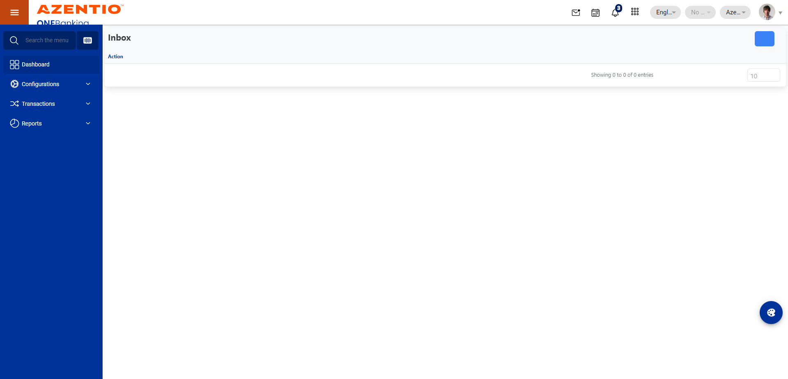And user Search the respective reference id and click on Action buttonstepdefinitions.HooksClass.addScreenshot(io.cucumber.java.Scenario)screenshotAnd user Click on Approve icon buttonstepdefinitions.HooksClass.addScreenshot(io.cucumber.java.Scenario)screenshot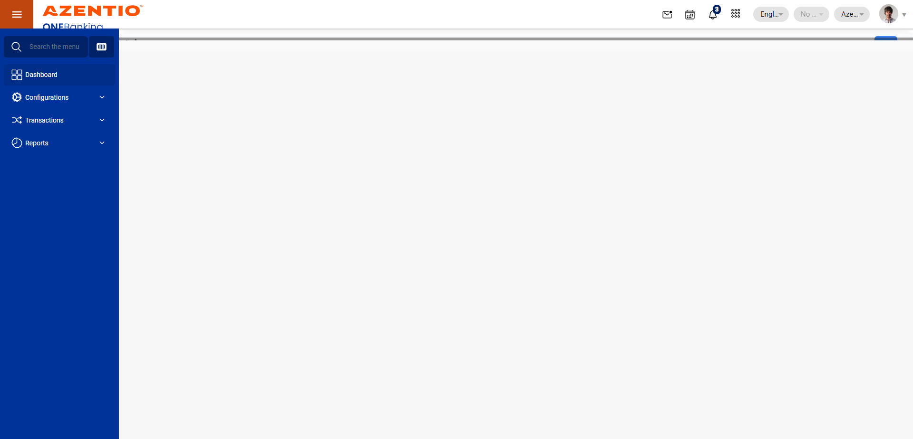And user Enter the remarks in Action confirmation popup screenstepdefinitions.HooksClass.addScreenshot(io.cucumber.java.Scenario)screenshot
And user save the warehouse master Recordstepdefinitions.HooksClass.addScreenshot(io.cucumber.java.Scenario)screenshot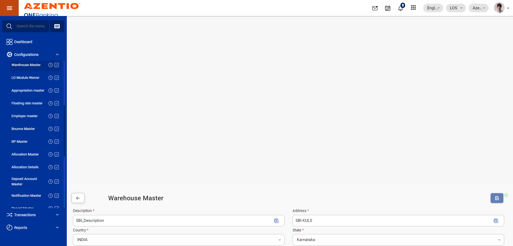And user click Temp view icon of Warehouse Masterstepdefinitions.HooksClass.addScreenshot(io.cucumber.java.Scenario)screenshot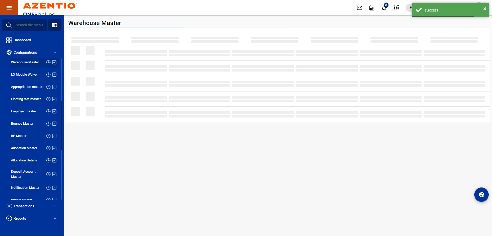And user click on First Record Edit iconstepdefinitions.HooksClass.addScreenshot(io.cucumber.java.Scenario)screenshotAnd user Enter the value in description and Modify itstepdefinitions.HooksClass.addScreenshot(io.cucumber.java.Scenario)screenshot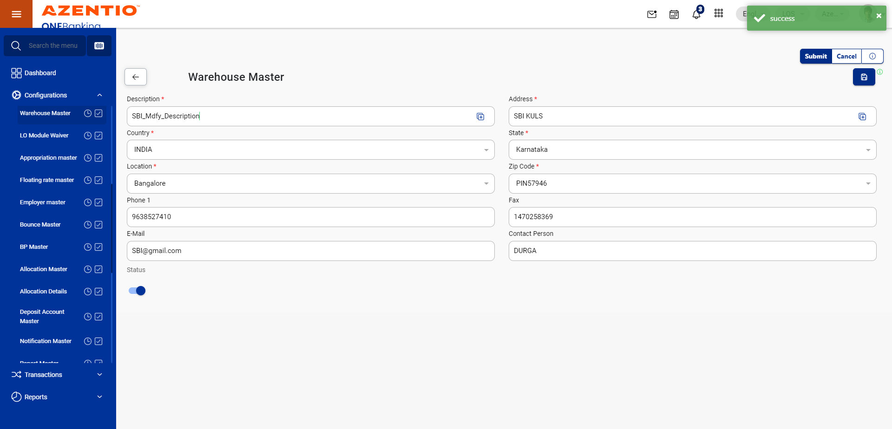And user Enter the value in Address field and Modify itstepdefinitions.HooksClass.addScreenshot(io.cucumber.java.Scenario)screenshotAnd user click on the update buttonstepdefinitions.HooksClass.addScreenshot(io.cucumber.java.Scenario)screenshot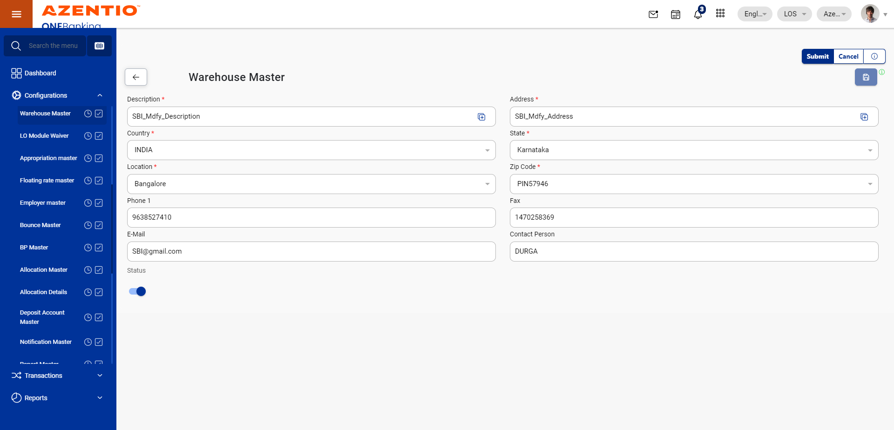And user click list view icon of Warehouse Masterstepdefinitions.HooksClass.addScreenshot(io.cucumber.java.Scenario)screenshotAnd user click on First Record Edit iconstepdefinitions.HooksClass.addScreenshot(io.cucumber.java.Scenario)screenshot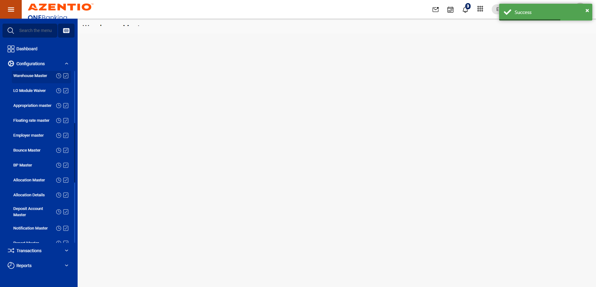And user Enter the value in description and ReModify itstepdefinitions.HooksClass.addScreenshot(io.cucumber.java.Scenario)screenshot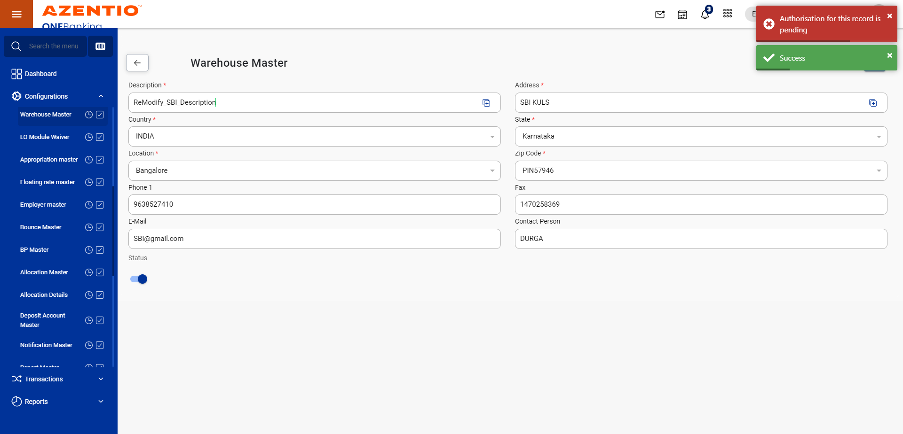And user Enter the value in Address field and ReModify itstepdefinitions.HooksClass.addScreenshot(io.cucumber.java.Scenario)screenshot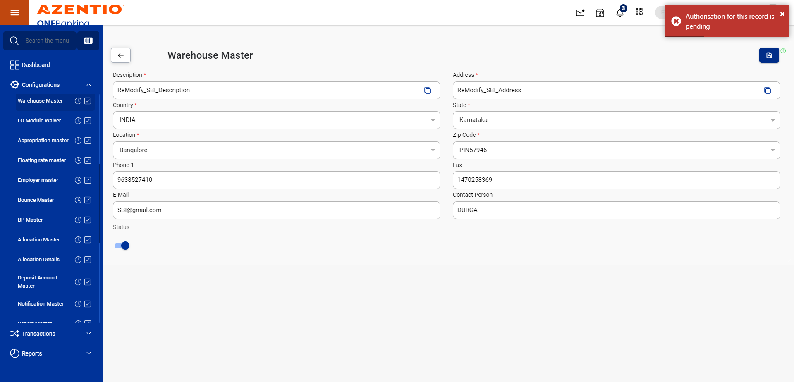And user click on the update buttonstepdefinitions.HooksClass.addScreenshot(io.cucumber.java.Scenario)screenshot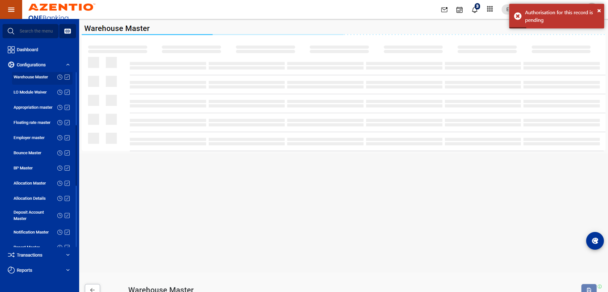And user goto the Maker Inbox and store the Referance IDstepdefinitions.HooksClass.addScreenshot(io.cucumber.java.Scenario)screenshot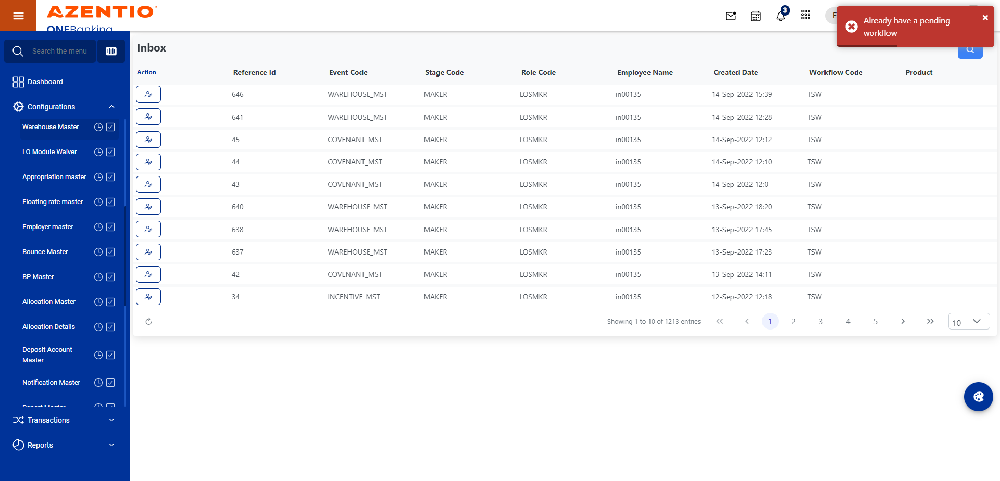Then user Click on Action Iconstepdefinitions.HooksClass.addScreenshot(io.cucumber.java.Scenario)screenshot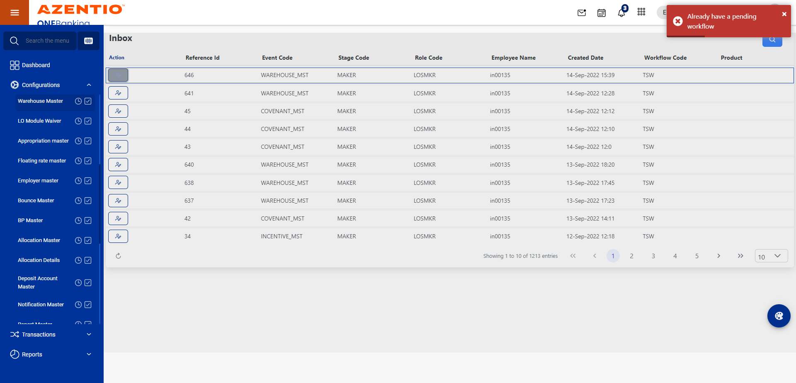And user verify the submit button and submit the Record from Maker stagestepdefinitions.HooksClass.addScreenshot(io.cucumber.java.Scenario)screenshotFailverify Checker user is able to Approve the recordGiven user log in as uls application checkerstepdefinitions.HooksClass.addScreenshot(io.cucumber.java.Scenario)screenshot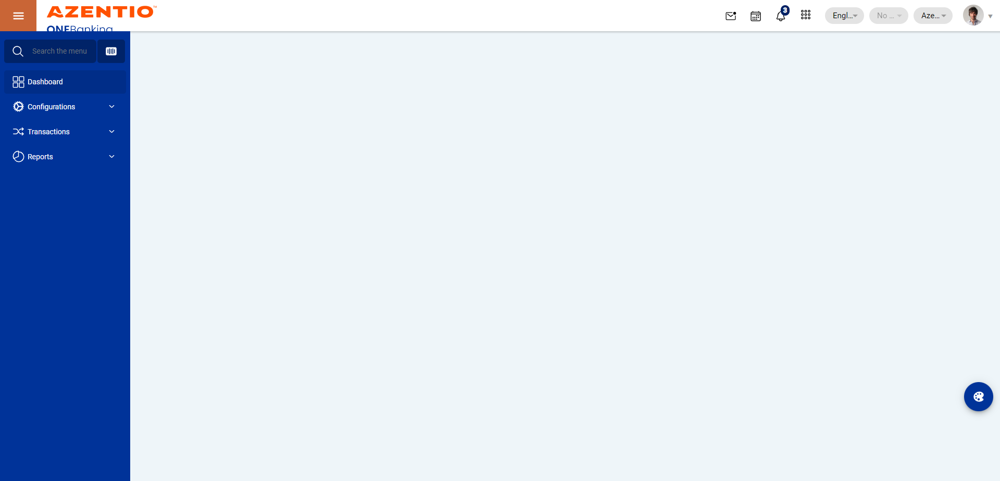And user Click on Checker Mailbox iconstepdefinitions.HooksClass.addScreenshot(io.cucumber.java.Scenario)screenshot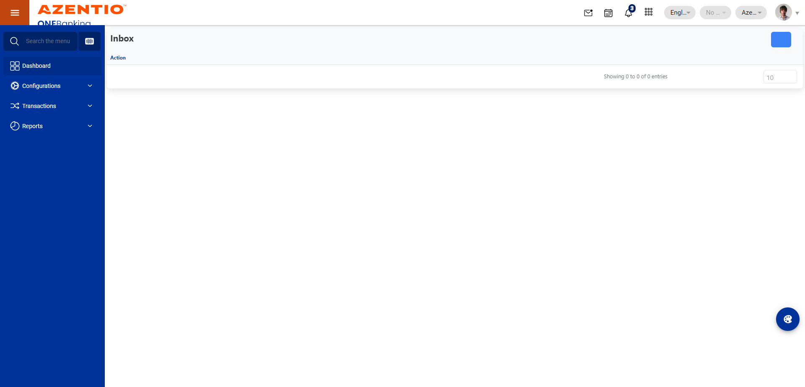And user Search the respective reference id and click on Action buttonstepdefinitions.HooksClass.addScreenshot(io.cucumber.java.Scenario)screenshotAnd user Click on Approve icon buttonstepdefinitions.HooksClass.addScreenshot(io.cucumber.java.Scenario)screenshot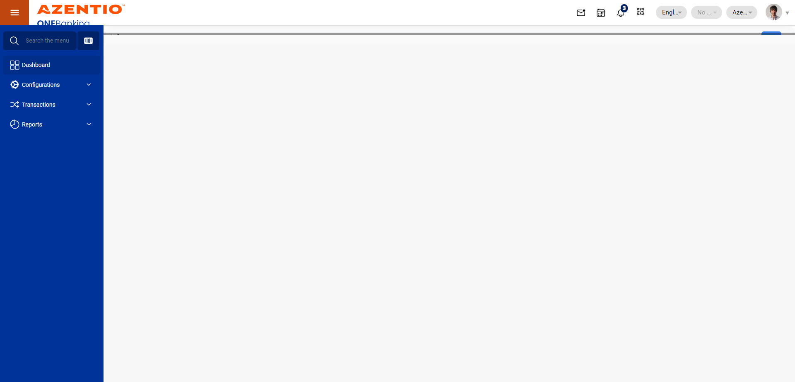And user Enter the remarks in Action confirmation popup screenstepdefinitions.HooksClass.addScreenshot(io.cucumber.java.Scenario)screenshot Then user Click on Remarks button in Action confirmation popup screenstepdefinitions.HooksClass.addScreenshot(io.cucumber.java.Scenario)screenshot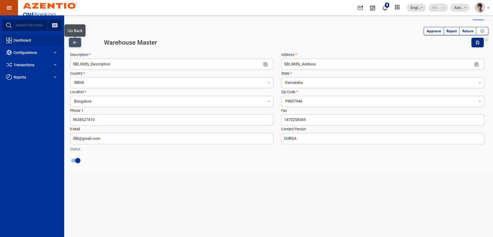Then user verify the Record got Approved in checker stagestepdefinitions.HooksClass.addScreenshot(io.cucumber.java.Scenario)screenshotPassRecord should get approved and display in the system under Approved List viewGiven user log in as uls application makerstepdefinitions.HooksClass.addScreenshot(io.cucumber.java.Scenario)screenshotThen user click on configurations Tabstepdefinitions.HooksClass.addScreenshot(io.cucumber.java.Scenario)screenshot
Then user Click on Remarks button in Action confirmation popup screenstepdefinitions.HooksClass.addScreenshot(io.cucumber.java.Scenario)screenshot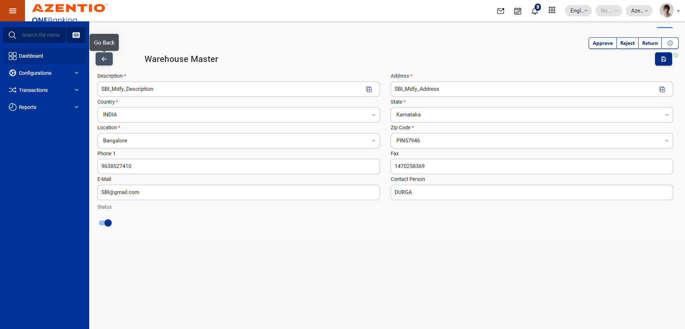Then user verify the Record got Approved in checker stagestepdefinitions.HooksClass.addScreenshot(io.cucumber.java.Scenario)screenshotPassRecord should get approved and display in the system under Approved List viewGiven user log in as uls application makerstepdefinitions.HooksClass.addScreenshot(io.cucumber.java.Scenario)screenshotThen user click on configurations Tabstepdefinitions.HooksClass.addScreenshot(io.cucumber.java.Scenario)screenshot When user click Config Manager menustepdefinitions.HooksClass.addScreenshot(io.cucumber.java.Scenario)screenshotAnd user click list view icon of Warehouse Masterstepdefinitions.HooksClass.addScreenshot(io.cucumber.java.Scenario)screenshotThen User validate the WareHouse Modify approved record in list viewstepdefinitions.HooksClass.addScreenshot(io.cucumber.java.Scenario)screenshot
When user click Config Manager menustepdefinitions.HooksClass.addScreenshot(io.cucumber.java.Scenario)screenshotAnd user click list view icon of Warehouse Masterstepdefinitions.HooksClass.addScreenshot(io.cucumber.java.Scenario)screenshotThen User validate the WareHouse Modify approved record in list viewstepdefinitions.HooksClass.addScreenshot(io.cucumber.java.Scenario)screenshot Passverify while modification system enters the invalid data (Invalid data types)Given user log in as uls application makerstepdefinitions.HooksClass.addScreenshot(io.cucumber.java.Scenario)screenshotThen user click on configurations Tabstepdefinitions.HooksClass.addScreenshot(io.cucumber.java.Scenario)screenshotWhen user click Config Manager menustepdefinitions.HooksClass.addScreenshot(io.cucumber.java.Scenario)screenshotAnd user click list view icon of Warehouse Masterstepdefinitions.HooksClass.addScreenshot(io.cucumber.java.Scenario)screenshot
Passverify while modification system enters the invalid data (Invalid data types)Given user log in as uls application makerstepdefinitions.HooksClass.addScreenshot(io.cucumber.java.Scenario)screenshotThen user click on configurations Tabstepdefinitions.HooksClass.addScreenshot(io.cucumber.java.Scenario)screenshotWhen user click Config Manager menustepdefinitions.HooksClass.addScreenshot(io.cucumber.java.Scenario)screenshotAnd user click list view icon of Warehouse Masterstepdefinitions.HooksClass.addScreenshot(io.cucumber.java.Scenario)screenshot And user click Temp view icon of Warehouse Masterstepdefinitions.HooksClass.addScreenshot(io.cucumber.java.Scenario)screenshotAnd user click on First Record Edit iconstepdefinitions.HooksClass.addScreenshot(io.cucumber.java.Scenario)screenshot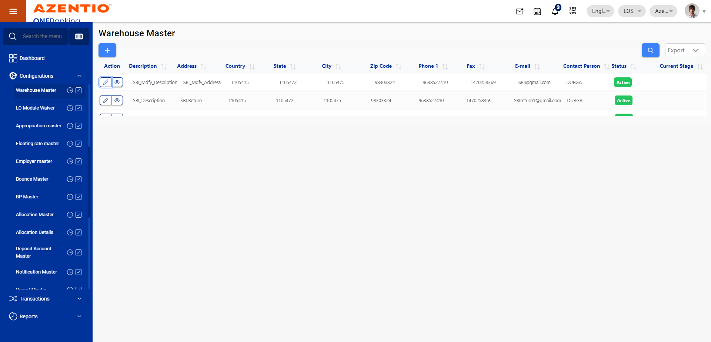And user Enter the value in description and Modify itstepdefinitions.HooksClass.addScreenshot(io.cucumber.java.Scenario)screenshotAnd user Enter the value in Address field and Modify itstepdefinitions.HooksClass.addScreenshot(io.cucumber.java.Scenario)screenshot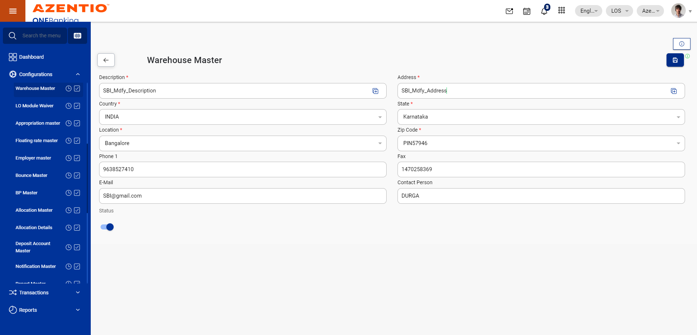And user Enter Invalid Data in warehouse Masterstepdefinitions.HooksClass.addScreenshot(io.cucumber.java.Scenario)screenshot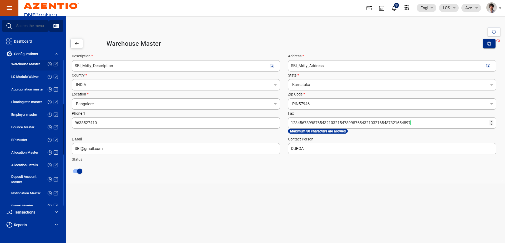FailModification of Warehouse Master recordGiven user log in as uls application makerstepdefinitions.HooksClass.addScreenshot(io.cucumber.java.Scenario)screenshot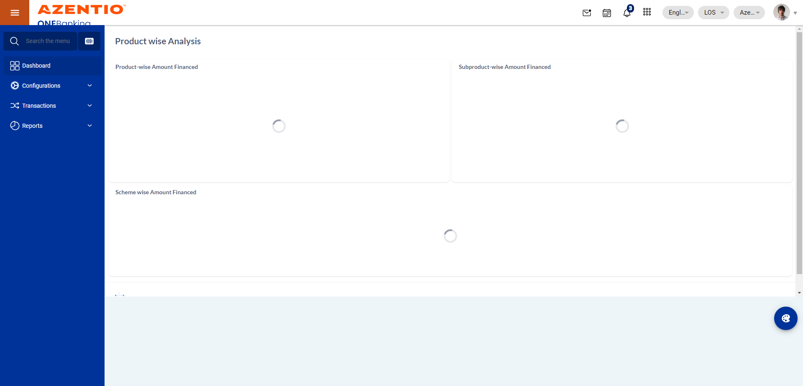Then user click on configurations Tabstepdefinitions.HooksClass.addScreenshot(io.cucumber.java.Scenario)screenshotWhen user click Config Manager menustepdefinitions.HooksClass.addScreenshot(io.cucumber.java.Scenario)screenshotAnd user click list view icon of Warehouse Masterstepdefinitions.HooksClass.addScreenshot(io.cucumber.java.Scenario)screenshotAnd user click on Add icon for Warehouse masterstepdefinitions.HooksClass.addScreenshot(io.cucumber.java.Scenario)screenshot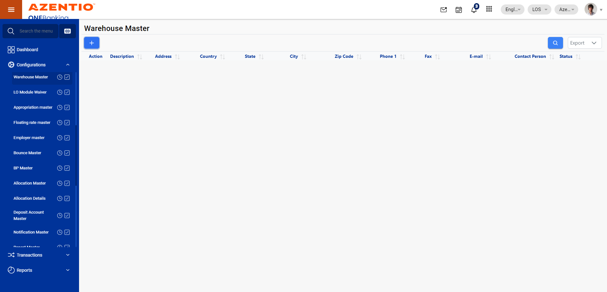And user Enter the value in description and verify itstepdefinitions.HooksClass.addScreenshot(io.cucumber.java.Scenario)screenshotAnd user Enter the value in Address field and verify itstepdefinitions.HooksClass.addScreenshot(io.cucumber.java.Scenario)screenshot
And user click Temp view icon of Warehouse Masterstepdefinitions.HooksClass.addScreenshot(io.cucumber.java.Scenario)screenshotAnd user click on First Record Edit iconstepdefinitions.HooksClass.addScreenshot(io.cucumber.java.Scenario)screenshot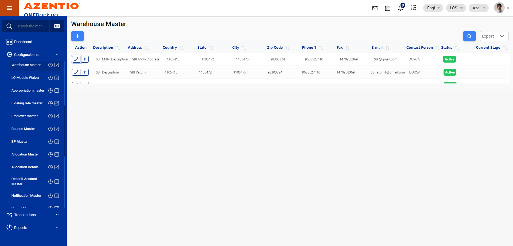And user Enter the value in description and Modify itstepdefinitions.HooksClass.addScreenshot(io.cucumber.java.Scenario)screenshotAnd user Enter the value in Address field and Modify itstepdefinitions.HooksClass.addScreenshot(io.cucumber.java.Scenario)screenshot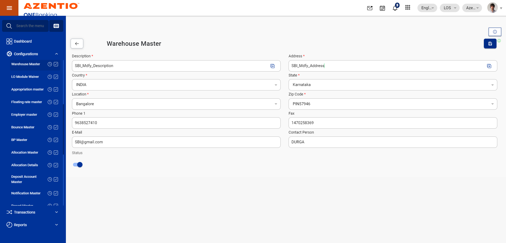And user Enter Invalid Data in warehouse Masterstepdefinitions.HooksClass.addScreenshot(io.cucumber.java.Scenario)screenshot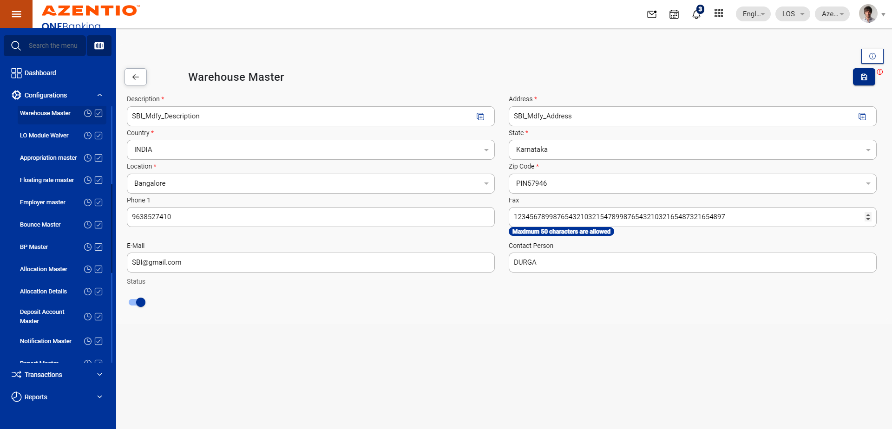FailModification of Warehouse Master recordGiven user log in as uls application makerstepdefinitions.HooksClass.addScreenshot(io.cucumber.java.Scenario)screenshot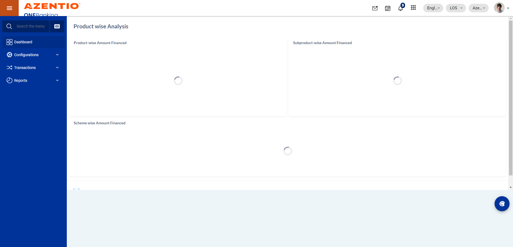Then user click on configurations Tabstepdefinitions.HooksClass.addScreenshot(io.cucumber.java.Scenario)screenshotWhen user click Config Manager menustepdefinitions.HooksClass.addScreenshot(io.cucumber.java.Scenario)screenshotAnd user click list view icon of Warehouse Masterstepdefinitions.HooksClass.addScreenshot(io.cucumber.java.Scenario)screenshotAnd user click on Add icon for Warehouse masterstepdefinitions.HooksClass.addScreenshot(io.cucumber.java.Scenario)screenshot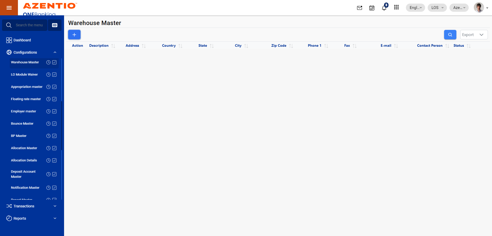And user Enter the value in description and verify itstepdefinitions.HooksClass.addScreenshot(io.cucumber.java.Scenario)screenshotAnd user Enter the value in Address field and verify itstepdefinitions.HooksClass.addScreenshot(io.cucumber.java.Scenario)screenshot And user Enter the value in country field and verify itstepdefinitions.HooksClass.addScreenshot(io.cucumber.java.Scenario)screenshotAnd user Enter the value in state field and verify itstepdefinitions.HooksClass.addScreenshot(io.cucumber.java.Scenario)screenshotAnd user Enter the value in Location field and verify itstepdefinitions.HooksClass.addScreenshot(io.cucumber.java.Scenario)screenshot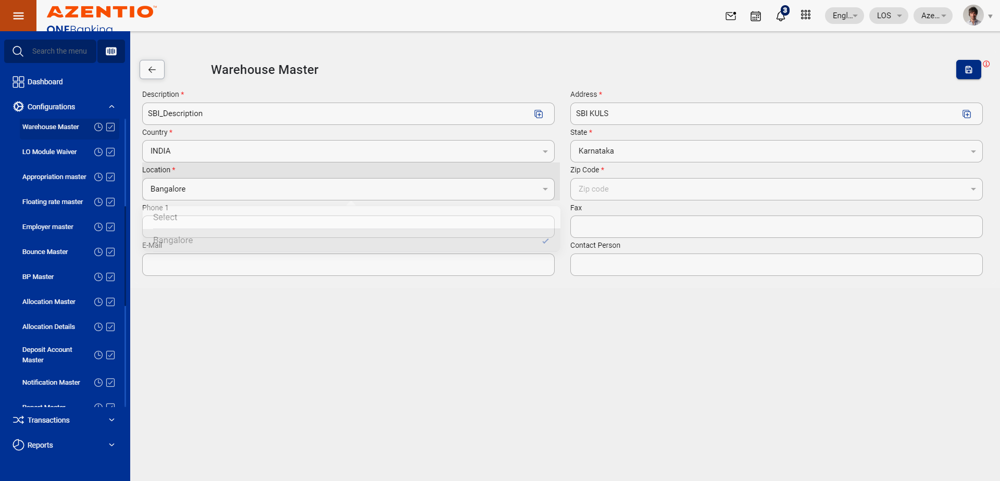And user Enter the value in Zip code field and verify itstepdefinitions.HooksClass.addScreenshot(io.cucumber.java.Scenario)screenshotAnd user Enter the value in Phone field and verify itstepdefinitions.HooksClass.addScreenshot(io.cucumber.java.Scenario)screenshot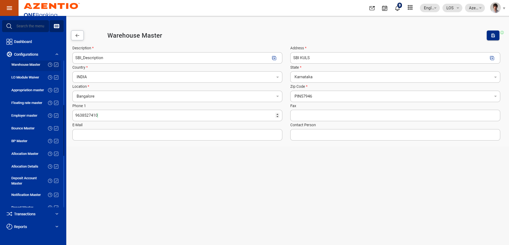And user Enter the value in Fax field and verify itstepdefinitions.HooksClass.addScreenshot(io.cucumber.java.Scenario)screenshot
And user Enter the value in country field and verify itstepdefinitions.HooksClass.addScreenshot(io.cucumber.java.Scenario)screenshotAnd user Enter the value in state field and verify itstepdefinitions.HooksClass.addScreenshot(io.cucumber.java.Scenario)screenshotAnd user Enter the value in Location field and verify itstepdefinitions.HooksClass.addScreenshot(io.cucumber.java.Scenario)screenshot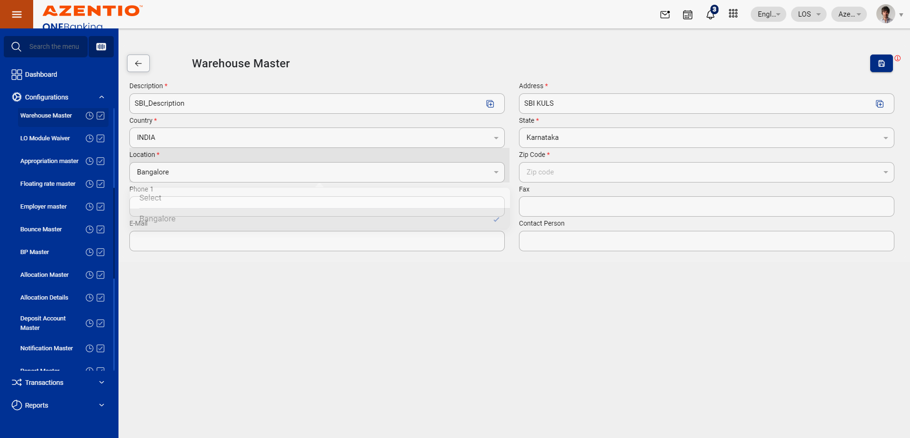And user Enter the value in Zip code field and verify itstepdefinitions.HooksClass.addScreenshot(io.cucumber.java.Scenario)screenshotAnd user Enter the value in Phone field and verify itstepdefinitions.HooksClass.addScreenshot(io.cucumber.java.Scenario)screenshot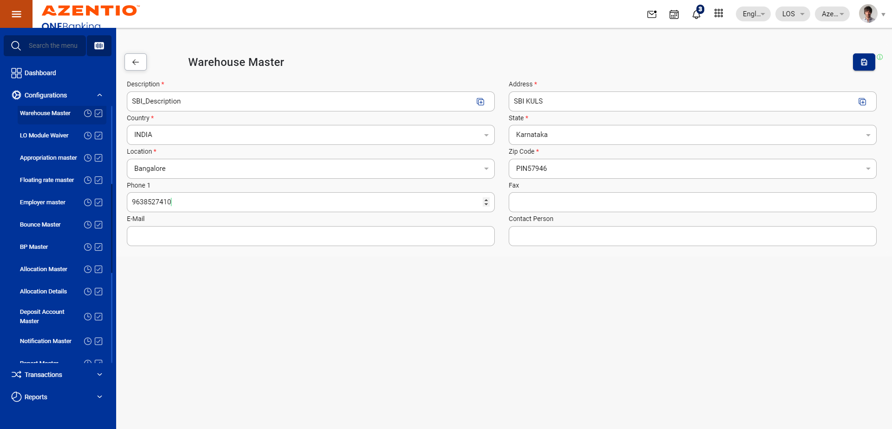And user Enter the value in Fax field and verify itstepdefinitions.HooksClass.addScreenshot(io.cucumber.java.Scenario)screenshot And user Enter the value in Email field and verify itstepdefinitions.HooksClass.addScreenshot(io.cucumber.java.Scenario)screenshotAnd user Enter the value in Contact person field and verify itstepdefinitions.HooksClass.addScreenshot(io.cucumber.java.Scenario)screenshotAnd user save the warehouse master Recordstepdefinitions.HooksClass.addScreenshot(io.cucumber.java.Scenario)screenshotAnd user click Temp view icon of Warehouse Masterstepdefinitions.HooksClass.addScreenshot(io.cucumber.java.Scenario)screenshotAnd user click on First Record Edit iconstepdefinitions.HooksClass.addScreenshot(io.cucumber.java.Scenario)screenshotAnd user Enter the value in description and Modify Reject itstepdefinitions.HooksClass.addScreenshot(io.cucumber.java.Scenario)screenshotAnd user Enter the value in Address field and Modify Reject itstepdefinitions.HooksClass.addScreenshot(io.cucumber.java.Scenario)screenshotAnd user click on the update buttonstepdefinitions.HooksClass.addScreenshot(io.cucumber.java.Scenario)screenshotAnd user goto the Maker Inbox and store the Referance IDstepdefinitions.HooksClass.addScreenshot(io.cucumber.java.Scenario)screenshotThen user Click on Action Iconstepdefinitions.HooksClass.addScreenshot(io.cucumber.java.Scenario)screenshotAnd user verify the submit button and submit the Record from Maker stagestepdefinitions.HooksClass.addScreenshot(io.cucumber.java.Scenario)screenshotFailverify Checker user is able to Approve the recordGiven user log in as uls application checkerstepdefinitions.HooksClass.addScreenshot(io.cucumber.java.Scenario)screenshotAnd user Click on Checker Mailbox iconstepdefinitions.HooksClass.addScreenshot(io.cucumber.java.Scenario)screenshotAnd user Search the respective reference id and click on Action buttonstepdefinitions.HooksClass.addScreenshot(io.cucumber.java.Scenario)screenshotAnd user Click on Reject icon buttonstepdefinitions.HooksClass.addScreenshot(io.cucumber.java.Scenario)screenshotAnd user Enter the remarks for Reject the Record in checkerStep skippedThen user Click on Remarks button for Reject confirmation AlertStep skippedThen user verify the Record got Rejected in checker stageStep skippedPassRecord should get approved and display in the system under Approved List viewGiven user log in as uls application makerstepdefinitions.HooksClass.addScreenshot(io.cucumber.java.Scenario)screenshotThen user click on configurations Tabstepdefinitions.HooksClass.addScreenshot(io.cucumber.java.Scenario)screenshotWhen user click Config Manager menustepdefinitions.HooksClass.addScreenshot(io.cucumber.java.Scenario)screenshotAnd user click list view icon of Warehouse Masterstepdefinitions.HooksClass.addScreenshot(io.cucumber.java.Scenario)screenshotThen User validate the WareHouse Modify Rejected record in list viewstepdefinitions.HooksClass.addScreenshot(io.cucumber.java.Scenario)screenshotFailModification of Warehouse Master recordGiven user log in as uls application makerstepdefinitions.HooksClass.addScreenshot(io.cucumber.java.Scenario)screenshotThen user click on configurations Tabstepdefinitions.HooksClass.addScreenshot(io.cucumber.java.Scenario)screenshotWhen user click Config Manager menustepdefinitions.HooksClass.addScreenshot(io.cucumber.java.Scenario)screenshotAnd user click list view icon of Warehouse Masterstepdefinitions.HooksClass.addScreenshot(io.cucumber.java.Scenario)screenshot
And user Enter the value in Email field and verify itstepdefinitions.HooksClass.addScreenshot(io.cucumber.java.Scenario)screenshotAnd user Enter the value in Contact person field and verify itstepdefinitions.HooksClass.addScreenshot(io.cucumber.java.Scenario)screenshotAnd user save the warehouse master Recordstepdefinitions.HooksClass.addScreenshot(io.cucumber.java.Scenario)screenshotAnd user click Temp view icon of Warehouse Masterstepdefinitions.HooksClass.addScreenshot(io.cucumber.java.Scenario)screenshotAnd user click on First Record Edit iconstepdefinitions.HooksClass.addScreenshot(io.cucumber.java.Scenario)screenshotAnd user Enter the value in description and Modify Reject itstepdefinitions.HooksClass.addScreenshot(io.cucumber.java.Scenario)screenshotAnd user Enter the value in Address field and Modify Reject itstepdefinitions.HooksClass.addScreenshot(io.cucumber.java.Scenario)screenshotAnd user click on the update buttonstepdefinitions.HooksClass.addScreenshot(io.cucumber.java.Scenario)screenshotAnd user goto the Maker Inbox and store the Referance IDstepdefinitions.HooksClass.addScreenshot(io.cucumber.java.Scenario)screenshotThen user Click on Action Iconstepdefinitions.HooksClass.addScreenshot(io.cucumber.java.Scenario)screenshotAnd user verify the submit button and submit the Record from Maker stagestepdefinitions.HooksClass.addScreenshot(io.cucumber.java.Scenario)screenshotFailverify Checker user is able to Approve the recordGiven user log in as uls application checkerstepdefinitions.HooksClass.addScreenshot(io.cucumber.java.Scenario)screenshotAnd user Click on Checker Mailbox iconstepdefinitions.HooksClass.addScreenshot(io.cucumber.java.Scenario)screenshotAnd user Search the respective reference id and click on Action buttonstepdefinitions.HooksClass.addScreenshot(io.cucumber.java.Scenario)screenshotAnd user Click on Reject icon buttonstepdefinitions.HooksClass.addScreenshot(io.cucumber.java.Scenario)screenshotAnd user Enter the remarks for Reject the Record in checkerStep skippedThen user Click on Remarks button for Reject confirmation AlertStep skippedThen user verify the Record got Rejected in checker stageStep skippedPassRecord should get approved and display in the system under Approved List viewGiven user log in as uls application makerstepdefinitions.HooksClass.addScreenshot(io.cucumber.java.Scenario)screenshotThen user click on configurations Tabstepdefinitions.HooksClass.addScreenshot(io.cucumber.java.Scenario)screenshotWhen user click Config Manager menustepdefinitions.HooksClass.addScreenshot(io.cucumber.java.Scenario)screenshotAnd user click list view icon of Warehouse Masterstepdefinitions.HooksClass.addScreenshot(io.cucumber.java.Scenario)screenshotThen User validate the WareHouse Modify Rejected record in list viewstepdefinitions.HooksClass.addScreenshot(io.cucumber.java.Scenario)screenshotFailModification of Warehouse Master recordGiven user log in as uls application makerstepdefinitions.HooksClass.addScreenshot(io.cucumber.java.Scenario)screenshotThen user click on configurations Tabstepdefinitions.HooksClass.addScreenshot(io.cucumber.java.Scenario)screenshotWhen user click Config Manager menustepdefinitions.HooksClass.addScreenshot(io.cucumber.java.Scenario)screenshotAnd user click list view icon of Warehouse Masterstepdefinitions.HooksClass.addScreenshot(io.cucumber.java.Scenario)screenshot And user click on Add icon for Warehouse masterstepdefinitions.HooksClass.addScreenshot(io.cucumber.java.Scenario)screenshotAnd user Enter the value in description and verify itstepdefinitions.HooksClass.addScreenshot(io.cucumber.java.Scenario)screenshot
And user click on Add icon for Warehouse masterstepdefinitions.HooksClass.addScreenshot(io.cucumber.java.Scenario)screenshotAnd user Enter the value in description and verify itstepdefinitions.HooksClass.addScreenshot(io.cucumber.java.Scenario)screenshot And user Enter the value in Address field and verify itstepdefinitions.HooksClass.addScreenshot(io.cucumber.java.Scenario)screenshot
And user Enter the value in Address field and verify itstepdefinitions.HooksClass.addScreenshot(io.cucumber.java.Scenario)screenshot And user Enter the value in country field and verify itstepdefinitions.HooksClass.addScreenshot(io.cucumber.java.Scenario)screenshotAnd user Enter the value in state field and verify itstepdefinitions.HooksClass.addScreenshot(io.cucumber.java.Scenario)screenshotAnd user Enter the value in Location field and verify itstepdefinitions.HooksClass.addScreenshot(io.cucumber.java.Scenario)screenshotAnd user Enter the value in Zip code field and verify itstepdefinitions.HooksClass.addScreenshot(io.cucumber.java.Scenario)screenshotAnd user Enter the value in Phone field and verify itstepdefinitions.HooksClass.addScreenshot(io.cucumber.java.Scenario)screenshotAnd user Enter the value in Fax field and verify itstepdefinitions.HooksClass.addScreenshot(io.cucumber.java.Scenario)screenshotAnd user Enter the value in Email field and verify itstepdefinitions.HooksClass.addScreenshot(io.cucumber.java.Scenario)screenshot
And user Enter the value in country field and verify itstepdefinitions.HooksClass.addScreenshot(io.cucumber.java.Scenario)screenshotAnd user Enter the value in state field and verify itstepdefinitions.HooksClass.addScreenshot(io.cucumber.java.Scenario)screenshotAnd user Enter the value in Location field and verify itstepdefinitions.HooksClass.addScreenshot(io.cucumber.java.Scenario)screenshotAnd user Enter the value in Zip code field and verify itstepdefinitions.HooksClass.addScreenshot(io.cucumber.java.Scenario)screenshotAnd user Enter the value in Phone field and verify itstepdefinitions.HooksClass.addScreenshot(io.cucumber.java.Scenario)screenshotAnd user Enter the value in Fax field and verify itstepdefinitions.HooksClass.addScreenshot(io.cucumber.java.Scenario)screenshotAnd user Enter the value in Email field and verify itstepdefinitions.HooksClass.addScreenshot(io.cucumber.java.Scenario)screenshot And user Enter the value in Contact person field and verify itstepdefinitions.HooksClass.addScreenshot(io.cucumber.java.Scenario)screenshotAnd user save the warehouse master Recordstepdefinitions.HooksClass.addScreenshot(io.cucumber.java.Scenario)screenshotAnd user click Temp view icon of Warehouse Masterstepdefinitions.HooksClass.addScreenshot(io.cucumber.java.Scenario)screenshotAnd user click on First Record Edit iconstepdefinitions.HooksClass.addScreenshot(io.cucumber.java.Scenario)screenshotAnd user Enter the value in description and Modify Return itstepdefinitions.HooksClass.addScreenshot(io.cucumber.java.Scenario)screenshotAnd user Enter the value in Address field and Modify Return itstepdefinitions.HooksClass.addScreenshot(io.cucumber.java.Scenario)screenshotAnd user click on the update buttonstepdefinitions.HooksClass.addScreenshot(io.cucumber.java.Scenario)screenshotAnd user goto the Maker Inbox and store the Referance IDstepdefinitions.HooksClass.addScreenshot(io.cucumber.java.Scenario)screenshotThen user Click on Action Iconstepdefinitions.HooksClass.addScreenshot(io.cucumber.java.Scenario)screenshot
And user Enter the value in Contact person field and verify itstepdefinitions.HooksClass.addScreenshot(io.cucumber.java.Scenario)screenshotAnd user save the warehouse master Recordstepdefinitions.HooksClass.addScreenshot(io.cucumber.java.Scenario)screenshotAnd user click Temp view icon of Warehouse Masterstepdefinitions.HooksClass.addScreenshot(io.cucumber.java.Scenario)screenshotAnd user click on First Record Edit iconstepdefinitions.HooksClass.addScreenshot(io.cucumber.java.Scenario)screenshotAnd user Enter the value in description and Modify Return itstepdefinitions.HooksClass.addScreenshot(io.cucumber.java.Scenario)screenshotAnd user Enter the value in Address field and Modify Return itstepdefinitions.HooksClass.addScreenshot(io.cucumber.java.Scenario)screenshotAnd user click on the update buttonstepdefinitions.HooksClass.addScreenshot(io.cucumber.java.Scenario)screenshotAnd user goto the Maker Inbox and store the Referance IDstepdefinitions.HooksClass.addScreenshot(io.cucumber.java.Scenario)screenshotThen user Click on Action Iconstepdefinitions.HooksClass.addScreenshot(io.cucumber.java.Scenario)screenshot And user verify the submit button and submit the Record from Maker stagestepdefinitions.HooksClass.addScreenshot(io.cucumber.java.Scenario)screenshotFailverify Checker user is able to Approve the recordGiven user log in as uls application checkerstepdefinitions.HooksClass.addScreenshot(io.cucumber.java.Scenario)screenshot
And user verify the submit button and submit the Record from Maker stagestepdefinitions.HooksClass.addScreenshot(io.cucumber.java.Scenario)screenshotFailverify Checker user is able to Approve the recordGiven user log in as uls application checkerstepdefinitions.HooksClass.addScreenshot(io.cucumber.java.Scenario)screenshot And user Click on Checker Mailbox iconstepdefinitions.HooksClass.addScreenshot(io.cucumber.java.Scenario)screenshotAnd user Search the respective reference id and click on Action buttonstepdefinitions.HooksClass.addScreenshot(io.cucumber.java.Scenario)screenshotAnd user Click on Return icon buttonstepdefinitions.HooksClass.addScreenshot(io.cucumber.java.Scenario)screenshotAnd user Enter the remarks for Return the Record in checkerstepdefinitions.HooksClass.addScreenshot(io.cucumber.java.Scenario)screenshotThen user Click on Remarks button for Return confirmation Alertstepdefinitions.HooksClass.addScreenshot(io.cucumber.java.Scenario)screenshot
And user Click on Checker Mailbox iconstepdefinitions.HooksClass.addScreenshot(io.cucumber.java.Scenario)screenshotAnd user Search the respective reference id and click on Action buttonstepdefinitions.HooksClass.addScreenshot(io.cucumber.java.Scenario)screenshotAnd user Click on Return icon buttonstepdefinitions.HooksClass.addScreenshot(io.cucumber.java.Scenario)screenshotAnd user Enter the remarks for Return the Record in checkerstepdefinitions.HooksClass.addScreenshot(io.cucumber.java.Scenario)screenshotThen user Click on Remarks button for Return confirmation Alertstepdefinitions.HooksClass.addScreenshot(io.cucumber.java.Scenario)screenshot Then user verify the Record got Returned in checker stagestepdefinitions.HooksClass.addScreenshot(io.cucumber.java.Scenario)screenshotPassRecord should get approved and display in the system under Approved List viewGiven user log in as uls application makerstepdefinitions.HooksClass.addScreenshot(io.cucumber.java.Scenario)screenshotThen user click on configurations Tabstepdefinitions.HooksClass.addScreenshot(io.cucumber.java.Scenario)screenshotWhen user click Config Manager menustepdefinitions.HooksClass.addScreenshot(io.cucumber.java.Scenario)screenshotAnd user click Temp view icon of Warehouse Masterstepdefinitions.HooksClass.addScreenshot(io.cucumber.java.Scenario)screenshotThen User validate the WareHouse Modify Retured record in list viewstepdefinitions.HooksClass.addScreenshot(io.cucumber.java.Scenario)screenshotPassverify the functionality of Activate/Deactivate buttonGiven user log in as uls application makerstepdefinitions.HooksClass.addScreenshot(io.cucumber.java.Scenario)screenshotThen user click on configurations Tabstepdefinitions.HooksClass.addScreenshot(io.cucumber.java.Scenario)screenshotWhen user click Config Manager menustepdefinitions.HooksClass.addScreenshot(io.cucumber.java.Scenario)screenshotAnd user click Temp view icon of Warehouse Masterstepdefinitions.HooksClass.addScreenshot(io.cucumber.java.Scenario)screenshotAnd user click on First Record Edit iconstepdefinitions.HooksClass.addScreenshot(io.cucumber.java.Scenario)screenshotAnd user verify the status buttonstepdefinitions.HooksClass.addScreenshot(io.cucumber.java.Scenario)screenshotAnd user verify the status is Activestepdefinitions.HooksClass.addScreenshot(io.cucumber.java.Scenario)screenshot
Then user verify the Record got Returned in checker stagestepdefinitions.HooksClass.addScreenshot(io.cucumber.java.Scenario)screenshotPassRecord should get approved and display in the system under Approved List viewGiven user log in as uls application makerstepdefinitions.HooksClass.addScreenshot(io.cucumber.java.Scenario)screenshotThen user click on configurations Tabstepdefinitions.HooksClass.addScreenshot(io.cucumber.java.Scenario)screenshotWhen user click Config Manager menustepdefinitions.HooksClass.addScreenshot(io.cucumber.java.Scenario)screenshotAnd user click Temp view icon of Warehouse Masterstepdefinitions.HooksClass.addScreenshot(io.cucumber.java.Scenario)screenshotThen User validate the WareHouse Modify Retured record in list viewstepdefinitions.HooksClass.addScreenshot(io.cucumber.java.Scenario)screenshotPassverify the functionality of Activate/Deactivate buttonGiven user log in as uls application makerstepdefinitions.HooksClass.addScreenshot(io.cucumber.java.Scenario)screenshotThen user click on configurations Tabstepdefinitions.HooksClass.addScreenshot(io.cucumber.java.Scenario)screenshotWhen user click Config Manager menustepdefinitions.HooksClass.addScreenshot(io.cucumber.java.Scenario)screenshotAnd user click Temp view icon of Warehouse Masterstepdefinitions.HooksClass.addScreenshot(io.cucumber.java.Scenario)screenshotAnd user click on First Record Edit iconstepdefinitions.HooksClass.addScreenshot(io.cucumber.java.Scenario)screenshotAnd user verify the status buttonstepdefinitions.HooksClass.addScreenshot(io.cucumber.java.Scenario)screenshotAnd user verify the status is Activestepdefinitions.HooksClass.addScreenshot(io.cucumber.java.Scenario)screenshot And user click on the update buttonstepdefinitions.HooksClass.addScreenshot(io.cucumber.java.Scenario)screenshotAnd user click Temp view icon of Warehouse Masterstepdefinitions.HooksClass.addScreenshot(io.cucumber.java.Scenario)screenshotAnd user verify the status is Deactivestepdefinitions.HooksClass.addScreenshot(io.cucumber.java.Scenario)screenshotPassTo verify list view of wareHouse masterGiven user log in as uls application makerstepdefinitions.HooksClass.addScreenshot(io.cucumber.java.Scenario)screenshotAnd go to configuration main menustepdefinitions.HooksClass.addScreenshot(io.cucumber.java.Scenario)screenshotAnd Go to config manager main menustepdefinitions.HooksClass.addScreenshot(io.cucumber.java.Scenario)screenshotAnd click on view button in ware house masterstepdefinitions.HooksClass.addScreenshot(io.cucumber.java.Scenario)screenshotThen verify list view records are non editablestepdefinitions.HooksClass.addScreenshot(io.cucumber.java.Scenario)screenshotThen verify user can able to add the record in to the ware house master screenstepdefinitions.HooksClass.addScreenshot(io.cucumber.java.Scenario)screenshotFailTO verify user can able to serach the list view record with matching and un matching input and user can able to download the the xls and pdf format fileGiven user log in as uls application makerstepdefinitions.HooksClass.addScreenshot(io.cucumber.java.Scenario)screenshotAnd go to configuration main menustepdefinitions.HooksClass.addScreenshot(io.cucumber.java.Scenario)screenshotAnd Go to config manager main menustepdefinitions.HooksClass.addScreenshot(io.cucumber.java.Scenario)screenshotAnd click on view button in ware house masterstepdefinitions.HooksClass.addScreenshot(io.cucumber.java.Scenario)screenshotAnd click on search button in ware house list viewstepdefinitions.HooksClass.addScreenshot(io.cucumber.java.Scenario)screenshotAnd enter the matching data in search test boxstepdefinitions.HooksClass.addScreenshot(io.cucumber.java.Scenario)screenshotThen verify user can able to see the matching recordsstepdefinitions.HooksClass.addScreenshot(io.cucumber.java.Scenario)screenshotAnd enter invalid text inputin search boxStep skippedThen verify system should not show the result for the un matched recordStep skippedAnd click on export buttonStep skippedAnd choose xls format to download the Xls fileStep skippedThen verify xls file is downloded in download sectionStep skippedAnd click on export buttonStep skippedAnd choose pdf format to download pdf fileStep skippedThen verify pdf file is downloded in download sectionStep skippedPassTo verify the list view data in wareHouse masterGiven user log in as uls application makerstepdefinitions.HooksClass.addScreenshot(io.cucumber.java.Scenario)screenshotThen user click on configurations Tabstepdefinitions.HooksClass.addScreenshot(io.cucumber.java.Scenario)screenshotWhen user click Config Manager menustepdefinitions.HooksClass.addScreenshot(io.cucumber.java.Scenario)screenshotAnd click on view button in ware house masterstepdefinitions.HooksClass.addScreenshot(io.cucumber.java.Scenario)screenshotAnd select the first approved recordstepdefinitions.HooksClass.addScreenshot(io.cucumber.java.Scenario)screenshotAnd Get The approved record datastepdefinitions.HooksClass.addScreenshot(io.cucumber.java.Scenario)screenshotThen verify System should display the currect description valuestepdefinitions.HooksClass.addScreenshot(io.cucumber.java.Scenario)screenshot
And user click on the update buttonstepdefinitions.HooksClass.addScreenshot(io.cucumber.java.Scenario)screenshotAnd user click Temp view icon of Warehouse Masterstepdefinitions.HooksClass.addScreenshot(io.cucumber.java.Scenario)screenshotAnd user verify the status is Deactivestepdefinitions.HooksClass.addScreenshot(io.cucumber.java.Scenario)screenshotPassTo verify list view of wareHouse masterGiven user log in as uls application makerstepdefinitions.HooksClass.addScreenshot(io.cucumber.java.Scenario)screenshotAnd go to configuration main menustepdefinitions.HooksClass.addScreenshot(io.cucumber.java.Scenario)screenshotAnd Go to config manager main menustepdefinitions.HooksClass.addScreenshot(io.cucumber.java.Scenario)screenshotAnd click on view button in ware house masterstepdefinitions.HooksClass.addScreenshot(io.cucumber.java.Scenario)screenshotThen verify list view records are non editablestepdefinitions.HooksClass.addScreenshot(io.cucumber.java.Scenario)screenshotThen verify user can able to add the record in to the ware house master screenstepdefinitions.HooksClass.addScreenshot(io.cucumber.java.Scenario)screenshotFailTO verify user can able to serach the list view record with matching and un matching input and user can able to download the the xls and pdf format fileGiven user log in as uls application makerstepdefinitions.HooksClass.addScreenshot(io.cucumber.java.Scenario)screenshotAnd go to configuration main menustepdefinitions.HooksClass.addScreenshot(io.cucumber.java.Scenario)screenshotAnd Go to config manager main menustepdefinitions.HooksClass.addScreenshot(io.cucumber.java.Scenario)screenshotAnd click on view button in ware house masterstepdefinitions.HooksClass.addScreenshot(io.cucumber.java.Scenario)screenshotAnd click on search button in ware house list viewstepdefinitions.HooksClass.addScreenshot(io.cucumber.java.Scenario)screenshotAnd enter the matching data in search test boxstepdefinitions.HooksClass.addScreenshot(io.cucumber.java.Scenario)screenshotThen verify user can able to see the matching recordsstepdefinitions.HooksClass.addScreenshot(io.cucumber.java.Scenario)screenshotAnd enter invalid text inputin search boxStep skippedThen verify system should not show the result for the un matched recordStep skippedAnd click on export buttonStep skippedAnd choose xls format to download the Xls fileStep skippedThen verify xls file is downloded in download sectionStep skippedAnd click on export buttonStep skippedAnd choose pdf format to download pdf fileStep skippedThen verify pdf file is downloded in download sectionStep skippedPassTo verify the list view data in wareHouse masterGiven user log in as uls application makerstepdefinitions.HooksClass.addScreenshot(io.cucumber.java.Scenario)screenshotThen user click on configurations Tabstepdefinitions.HooksClass.addScreenshot(io.cucumber.java.Scenario)screenshotWhen user click Config Manager menustepdefinitions.HooksClass.addScreenshot(io.cucumber.java.Scenario)screenshotAnd click on view button in ware house masterstepdefinitions.HooksClass.addScreenshot(io.cucumber.java.Scenario)screenshotAnd select the first approved recordstepdefinitions.HooksClass.addScreenshot(io.cucumber.java.Scenario)screenshotAnd Get The approved record datastepdefinitions.HooksClass.addScreenshot(io.cucumber.java.Scenario)screenshotThen verify System should display the currect description valuestepdefinitions.HooksClass.addScreenshot(io.cucumber.java.Scenario)screenshot Then verify system should display the currect address valuestepdefinitions.HooksClass.addScreenshot(io.cucumber.java.Scenario)screenshotThen verify system should display the currect phone 1 valuestepdefinitions.HooksClass.addScreenshot(io.cucumber.java.Scenario)screenshot
Then verify system should display the currect address valuestepdefinitions.HooksClass.addScreenshot(io.cucumber.java.Scenario)screenshotThen verify system should display the currect phone 1 valuestepdefinitions.HooksClass.addScreenshot(io.cucumber.java.Scenario)screenshot Then verify system should display the currect fax valuestepdefinitions.HooksClass.addScreenshot(io.cucumber.java.Scenario)screenshotThen verify system should display the currect mail valuestepdefinitions.HooksClass.addScreenshot(io.cucumber.java.Scenario)screenshot
Then verify system should display the currect fax valuestepdefinitions.HooksClass.addScreenshot(io.cucumber.java.Scenario)screenshotThen verify system should display the currect mail valuestepdefinitions.HooksClass.addScreenshot(io.cucumber.java.Scenario)screenshot Then verify system shoudl display the currect contarct person valuestepdefinitions.HooksClass.addScreenshot(io.cucumber.java.Scenario)screenshotThen verify system shoudl display the exact status of the recordstepdefinitions.HooksClass.addScreenshot(io.cucumber.java.Scenario)screenshot
Then verify system shoudl display the currect contarct person valuestepdefinitions.HooksClass.addScreenshot(io.cucumber.java.Scenario)screenshotThen verify system shoudl display the exact status of the recordstepdefinitions.HooksClass.addScreenshot(io.cucumber.java.Scenario)screenshot PassTo verify the list view of WIP RecordGiven user log in as uls application makerstepdefinitions.HooksClass.addScreenshot(io.cucumber.java.Scenario)screenshotAnd go to configuration main menustepdefinitions.HooksClass.addScreenshot(io.cucumber.java.Scenario)screenshot
PassTo verify the list view of WIP RecordGiven user log in as uls application makerstepdefinitions.HooksClass.addScreenshot(io.cucumber.java.Scenario)screenshotAnd go to configuration main menustepdefinitions.HooksClass.addScreenshot(io.cucumber.java.Scenario)screenshot And Go to config manager main menustepdefinitions.HooksClass.addScreenshot(io.cucumber.java.Scenario)screenshotAnd click on temp view in wareHouse master screenstepdefinitions.HooksClass.addScreenshot(io.cucumber.java.Scenario)screenshotThen verify WIP list view records are non editablestepdefinitions.HooksClass.addScreenshot(io.cucumber.java.Scenario)screenshotThen verify user can able to add the record in to the ware house master screenstepdefinitions.HooksClass.addScreenshot(io.cucumber.java.Scenario)screenshotAnd click on search button in ware house list viewstepdefinitions.HooksClass.addScreenshot(io.cucumber.java.Scenario)screenshotAnd enter the matching data in search test boxstepdefinitions.HooksClass.addScreenshot(io.cucumber.java.Scenario)screenshotThen verify user can able to see the matching recordstepdefinitions.HooksClass.addScreenshot(io.cucumber.java.Scenario)screenshotAnd enter invalid text inputin search boxstepdefinitions.HooksClass.addScreenshot(io.cucumber.java.Scenario)screenshotThen verify system should not show the result for the un matched recordstepdefinitions.HooksClass.addScreenshot(io.cucumber.java.Scenario)screenshotAnd click on export buttonstepdefinitions.HooksClass.addScreenshot(io.cucumber.java.Scenario)screenshotAnd choose xls format to download the Xls filestepdefinitions.HooksClass.addScreenshot(io.cucumber.java.Scenario)screenshotThen verify xls file is downloded in download sectionstepdefinitions.HooksClass.addScreenshot(io.cucumber.java.Scenario)screenshotAnd click on export buttonstepdefinitions.HooksClass.addScreenshot(io.cucumber.java.Scenario)screenshotAnd choose pdf format to download pdf filestepdefinitions.HooksClass.addScreenshot(io.cucumber.java.Scenario)screenshotThen verify pdf file is downloded in download sectionstepdefinitions.HooksClass.addScreenshot(io.cucumber.java.Scenario)screenshotAnd click on temp view in wareHouse master screenstepdefinitions.HooksClass.addScreenshot(io.cucumber.java.Scenario)screenshotAnd select the first record in WIPstepdefinitions.HooksClass.addScreenshot(io.cucumber.java.Scenario)screenshotAnd Get The WIP record datastepdefinitions.HooksClass.addScreenshot(io.cucumber.java.Scenario)screenshot
And Go to config manager main menustepdefinitions.HooksClass.addScreenshot(io.cucumber.java.Scenario)screenshotAnd click on temp view in wareHouse master screenstepdefinitions.HooksClass.addScreenshot(io.cucumber.java.Scenario)screenshotThen verify WIP list view records are non editablestepdefinitions.HooksClass.addScreenshot(io.cucumber.java.Scenario)screenshotThen verify user can able to add the record in to the ware house master screenstepdefinitions.HooksClass.addScreenshot(io.cucumber.java.Scenario)screenshotAnd click on search button in ware house list viewstepdefinitions.HooksClass.addScreenshot(io.cucumber.java.Scenario)screenshotAnd enter the matching data in search test boxstepdefinitions.HooksClass.addScreenshot(io.cucumber.java.Scenario)screenshotThen verify user can able to see the matching recordstepdefinitions.HooksClass.addScreenshot(io.cucumber.java.Scenario)screenshotAnd enter invalid text inputin search boxstepdefinitions.HooksClass.addScreenshot(io.cucumber.java.Scenario)screenshotThen verify system should not show the result for the un matched recordstepdefinitions.HooksClass.addScreenshot(io.cucumber.java.Scenario)screenshotAnd click on export buttonstepdefinitions.HooksClass.addScreenshot(io.cucumber.java.Scenario)screenshotAnd choose xls format to download the Xls filestepdefinitions.HooksClass.addScreenshot(io.cucumber.java.Scenario)screenshotThen verify xls file is downloded in download sectionstepdefinitions.HooksClass.addScreenshot(io.cucumber.java.Scenario)screenshotAnd click on export buttonstepdefinitions.HooksClass.addScreenshot(io.cucumber.java.Scenario)screenshotAnd choose pdf format to download pdf filestepdefinitions.HooksClass.addScreenshot(io.cucumber.java.Scenario)screenshotThen verify pdf file is downloded in download sectionstepdefinitions.HooksClass.addScreenshot(io.cucumber.java.Scenario)screenshotAnd click on temp view in wareHouse master screenstepdefinitions.HooksClass.addScreenshot(io.cucumber.java.Scenario)screenshotAnd select the first record in WIPstepdefinitions.HooksClass.addScreenshot(io.cucumber.java.Scenario)screenshotAnd Get The WIP record datastepdefinitions.HooksClass.addScreenshot(io.cucumber.java.Scenario)screenshot Then verify System should display the currect description valuestepdefinitions.HooksClass.addScreenshot(io.cucumber.java.Scenario)screenshot
Then verify System should display the currect description valuestepdefinitions.HooksClass.addScreenshot(io.cucumber.java.Scenario)screenshot Then verify system should display the currect address valuestepdefinitions.HooksClass.addScreenshot(io.cucumber.java.Scenario)screenshot
Then verify system should display the currect address valuestepdefinitions.HooksClass.addScreenshot(io.cucumber.java.Scenario)screenshot Then verify system should display the currect phone 1 valuestepdefinitions.HooksClass.addScreenshot(io.cucumber.java.Scenario)screenshotThen verify system should display the currect fax valuestepdefinitions.HooksClass.addScreenshot(io.cucumber.java.Scenario)screenshot
Then verify system should display the currect phone 1 valuestepdefinitions.HooksClass.addScreenshot(io.cucumber.java.Scenario)screenshotThen verify system should display the currect fax valuestepdefinitions.HooksClass.addScreenshot(io.cucumber.java.Scenario)screenshot Then verify system should display the currect mail valuestepdefinitions.HooksClass.addScreenshot(io.cucumber.java.Scenario)screenshotThen verify system shoudl display the currect contarct person valuestepdefinitions.HooksClass.addScreenshot(io.cucumber.java.Scenario)screenshot
Then verify system should display the currect mail valuestepdefinitions.HooksClass.addScreenshot(io.cucumber.java.Scenario)screenshotThen verify system shoudl display the currect contarct person valuestepdefinitions.HooksClass.addScreenshot(io.cucumber.java.Scenario)screenshot Then verify system shoudl display the exact status of the recordstepdefinitions.HooksClass.addScreenshot(io.cucumber.java.Scenario)screenshot
Then verify system shoudl display the exact status of the recordstepdefinitions.HooksClass.addScreenshot(io.cucumber.java.Scenario)screenshot
Started
Sep 14, 2022 03:33:08 pm
Ended
Sep 14, 2022 03:49:12 pm
Features Passed
0
Features Failed
1
Features
Scenarios
Steps
Timeline
Tags
| Name | Passed | Failed | Skipped | Others | Passed % |
|---|---|---|---|---|---|
| @AT_WHM_T001.1_Approve_ListView | 1 | 0 | 0 | 0 | 100% |
| @AT_WHM_T001_creation | 0 | 1 | 0 | 0 | 0% |
| @WareHouse2_AT-WHM-T011 | 0 | 1 | 0 | 0 | 0% |
| @AT_WHM_T002_Reject_ListView | 1 | 0 | 0 | 0 | 100% |
| @AT_WHM_T001.1_Approve | 0 | 1 | 0 | 0 | 0% |
| @AT-WHM-T003_Return | 0 | 1 | 0 | 0 | 0% |
| @AT_WHM_T005_Modification | 0 | 1 | 0 | 0 | 0% |
| @AT-WHM-T002_Reject | 0 | 1 | 0 | 0 | 0% |
| @wareHouse1_AT-WHM-T010 | 1 | 0 | 0 | 0 | 100% |
| @AT_WHM_T002_Return_ListView | 1 | 0 | 0 | 0 | 100% |
| @AT_WHM_T007_Modification_Reject | 0 | 1 | 0 | 0 | 0% |
| @AT_WHM_T005_Modification_Approve_ListView | 1 | 0 | 0 | 0 | 100% |
| @AT_WHM_T008_Modification_Checker_Return_Listview | 1 | 0 | 0 | 0 | 100% |
| @AT_WHM_T007_Modification_Checker_Reject_Listview | 1 | 0 | 0 | 0 | 100% |
| @WareHouse4_AT_WHM_T013 | 1 | 0 | 0 | 0 | 100% |
| @AT_WHM_T002_Return | 0 | 1 | 0 | 0 | 0% |
| @AT_WHM_T005_Modification_Approve | 0 | 1 | 0 | 0 | 0% |
| @AT_WHM_T007_Modification_Checker_Reject | 0 | 1 | 0 | 0 | 0% |
| @AT_WHM_T008_Modification_Checker_Return | 0 | 1 | 0 | 0 | 0% |
| @AT_WHM_T009_Active_Deactive | 1 | 0 | 0 | 0 | 100% |
| @AT_WHM_T006_Invalid | 1 | 0 | 0 | 0 | 100% |
| @AT_WHM_T004_Validation | 1 | 0 | 0 | 0 | 100% |
| @AT_WHM_T008_Modification_Return | 0 | 1 | 0 | 0 | 0% |
| @WareHouse3_AT-WHM-T012 | 1 | 0 | 0 | 0 | 100% |
| @AT_WHM_T002_Reject | 0 | 1 | 0 | 0 | 0% |
System/Environment
| Name | Value |
|---|---|
| version | 10 |
| os | windows |
-
@AT_WHM_T001.1_Approve_ListView
1 tests
@AT_WHM_T001.1_Approve_ListView
1 passedStatus Timestamp TestName Pass 15:34:46 pm Record should get approved and display in the system under Approved List view check the functionality of the Warehouse Master.Record should get approved and display in the system under Approved List view -
@AT_WHM_T001_creation
1 tests
@AT_WHM_T001_creation
1 failedStatus Timestamp TestName Fail 15:33:10 pm Creation of Warehouse Master record- Add Template check the functionality of the Warehouse Master.Creation of Warehouse Master record- Add Template -
@WareHouse2_AT-WHM-T011
1 tests
@WareHouse2_AT-WHM-T011
1 failedStatus Timestamp TestName Fail 15:47:09 pm TO verify user can able to serach the list view record with matching and un matching input and user can able to download the the xls and pdf format file check the functionality of the Warehouse Master.TO verify user can able to serach the list view record with matching and un matching input and user can able to download the the xls and pdf format file -
@AT_WHM_T002_Reject_ListView
1 tests
@AT_WHM_T002_Reject_ListView
1 passedStatus Timestamp TestName Pass 15:36:51 pm Record should get approved and display in the system under Reject List view check the functionality of the Warehouse Master.Record should get approved and display in the system under Reject List view -
@AT_WHM_T001.1_Approve
1 tests
@AT_WHM_T001.1_Approve
1 failedStatus Timestamp TestName Fail 15:34:06 pm verify Checker user is able to Approve the record check the functionality of the Warehouse Master.verify Checker user is able to Approve the record -
@AT-WHM-T003_Return
1 tests
@AT-WHM-T003_Return
1 failedStatus Timestamp TestName Fail 15:37:09 pm Creation of Warehouse Master record- Add Template check the functionality of the Warehouse Master.Creation of Warehouse Master record- Add Template -
@AT_WHM_T005_Modification
1 tests
@AT_WHM_T005_Modification
1 failedStatus Timestamp TestName Fail 15:39:29 pm Modification of Warehouse Master record check the functionality of the Warehouse Master.Modification of Warehouse Master record -
@AT-WHM-T002_Reject
1 tests
@AT-WHM-T002_Reject
1 failedStatus Timestamp TestName Fail 15:35:04 pm Creation of Warehouse Master record- Add Template check the functionality of the Warehouse Master.Creation of Warehouse Master record- Add Template -
@wareHouse1_AT-WHM-T010
1 tests
@wareHouse1_AT-WHM-T010
1 passedStatus Timestamp TestName Pass 15:46:48 pm To verify list view of wareHouse master check the functionality of the Warehouse Master.To verify list view of wareHouse master -
@AT_WHM_T002_Return_ListView
1 tests
@AT_WHM_T002_Return_ListView
1 passedStatus Timestamp TestName Pass 15:38:45 pm Record should get approved and display in the system under Approved List view check the functionality of the Warehouse Master.Record should get approved and display in the system under Approved List view -
@AT_WHM_T007_Modification_Reject
1 tests
@AT_WHM_T007_Modification_Reject
1 failedStatus Timestamp TestName Fail 15:42:09 pm Modification of Warehouse Master record check the functionality of the Warehouse Master.Modification of Warehouse Master record -
@AT_WHM_T005_Modification_Approve_ListView
1 tests
@AT_WHM_T005_Modification_Approve_ListView
1 passedStatus Timestamp TestName Pass 15:41:22 pm Record should get approved and display in the system under Approved List view check the functionality of the Warehouse Master.Record should get approved and display in the system under Approved List view -
@AT_WHM_T008_Modification_Checker_Return_Listview
1 tests
@AT_WHM_T008_Modification_Checker_Return_Listview
1 passedStatus Timestamp TestName Pass 15:46:06 pm Record should get approved and display in the system under Approved List view check the functionality of the Warehouse Master.Record should get approved and display in the system under Approved List view -
@AT_WHM_T007_Modification_Checker_Reject_Listview
1 tests
@AT_WHM_T007_Modification_Checker_Reject_Listview
1 passedStatus Timestamp TestName Pass 15:43:48 pm Record should get approved and display in the system under Approved List view check the functionality of the Warehouse Master.Record should get approved and display in the system under Approved List view -
@WareHouse4_AT_WHM_T013
1 tests
@WareHouse4_AT_WHM_T013
1 passedStatus Timestamp TestName Pass 15:47:56 pm To verify the list view of WIP Record check the functionality of the Warehouse Master.To verify the list view of WIP Record -
@AT_WHM_T002_Return
1 tests
@AT_WHM_T002_Return
1 failedStatus Timestamp TestName Fail 15:38:05 pm verify Checker user is able to Approve the record check the functionality of the Warehouse Master.verify Checker user is able to Approve the record -
@AT_WHM_T005_Modification_Approve
1 tests
@AT_WHM_T005_Modification_Approve
1 failedStatus Timestamp TestName Fail 15:40:40 pm verify Checker user is able to Approve the record check the functionality of the Warehouse Master.verify Checker user is able to Approve the record -
@AT_WHM_T007_Modification_Checker_Reject
1 tests
@AT_WHM_T007_Modification_Checker_Reject
1 failedStatus Timestamp TestName Fail 15:43:10 pm verify Checker user is able to Approve the record check the functionality of the Warehouse Master.verify Checker user is able to Approve the record -
@AT_WHM_T008_Modification_Checker_Return
1 tests
@AT_WHM_T008_Modification_Checker_Return
1 failedStatus Timestamp TestName Fail 15:45:24 pm verify Checker user is able to Approve the record check the functionality of the Warehouse Master.verify Checker user is able to Approve the record -
@AT_WHM_T009_Active_Deactive
1 tests
@AT_WHM_T009_Active_Deactive
1 passedStatus Timestamp TestName Pass 15:46:24 pm verify the functionality of Activate/Deactivate button check the functionality of the Warehouse Master.verify the functionality of Activate/Deactivate button -
@AT_WHM_T006_Invalid
1 tests
@AT_WHM_T006_Invalid
1 passedStatus Timestamp TestName Pass 15:41:45 pm verify while modification system enters the invalid data (Invalid data types) check the functionality of the Warehouse Master.verify while modification system enters the invalid data (Invalid data types) -
@AT_WHM_T004_Validation
1 tests
@AT_WHM_T004_Validation
1 passedStatus Timestamp TestName Pass 15:39:05 pm Creation of Warehouse Master record- Add Template check the functionality of the Warehouse Master.Creation of Warehouse Master record- Add Template -
@AT_WHM_T008_Modification_Return
1 tests
@AT_WHM_T008_Modification_Return
1 failedStatus Timestamp TestName Fail 15:44:22 pm Modification of Warehouse Master record check the functionality of the Warehouse Master.Modification of Warehouse Master record -
@WareHouse3_AT-WHM-T012
1 tests
@WareHouse3_AT-WHM-T012
1 passedStatus Timestamp TestName Pass 15:47:29 pm To verify the list view data in wareHouse master check the functionality of the Warehouse Master.To verify the list view data in wareHouse master -
@AT_WHM_T002_Reject
1 tests
@AT_WHM_T002_Reject
1 failedStatus Timestamp TestName Fail 15:36:01 pm verify Checker user is able to Reject the record check the functionality of the Warehouse Master.verify Checker user is able to Reject the record
-
java.lang.AssertionError
1 tests
java.lang.AssertionError
1 failedStatus Timestamp TestName Fail 15:47:28 pm Then verify user can able to see the matching records check the functionality of the Warehouse Master.TO verify user can able to serach the list view record with matching and un matching input and user can able to download the the xls and pdf format file.Then verify user can able to see the matching records -
org.openqa.selenium.TimeoutException
1 tests
org.openqa.selenium.TimeoutException
1 failedStatus Timestamp TestName Fail 15:33:43 pm And user verify the submit button and submit the Record from Maker stage check the functionality of the Warehouse Master.Creation of Warehouse Master record- Add Template.And user verify the submit button and submit the Record from Maker stageFail 15:34:25 pm Then user verify the Record got Approved in checker stage check the functionality of the Warehouse Master.verify Checker user is able to Approve the record.Then user verify the Record got Approved in checker stageFail 15:35:36 pm And user verify the submit button and submit the Record from Maker stage check the functionality of the Warehouse Master.Creation of Warehouse Master record- Add Template.And user verify the submit button and submit the Record from Maker stageFail 15:36:30 pm And user Click on Reject icon button check the functionality of the Warehouse Master.verify Checker user is able to Reject the record.And user Click on Reject icon buttonFail 15:37:37 pm And user verify the submit button and submit the Record from Maker stage check the functionality of the Warehouse Master.Creation of Warehouse Master record- Add Template.And user verify the submit button and submit the Record from Maker stageFail 15:38:24 pm And user Click on Return icon button check the functionality of the Warehouse Master.verify Checker user is able to Approve the record.And user Click on Return icon buttonFail 15:40:15 pm And user verify the submit button and submit the Record from Maker stage check the functionality of the Warehouse Master.Modification of Warehouse Master record.And user verify the submit button and submit the Record from Maker stageFail 15:41:01 pm Then user verify the Record got Approved in checker stage check the functionality of the Warehouse Master.verify Checker user is able to Approve the record.Then user verify the Record got Approved in checker stageFail 15:42:46 pm And user verify the submit button and submit the Record from Maker stage check the functionality of the Warehouse Master.Modification of Warehouse Master record.And user verify the submit button and submit the Record from Maker stageFail 15:43:28 pm And user Click on Reject icon button check the functionality of the Warehouse Master.verify Checker user is able to Approve the record.And user Click on Reject icon buttonFail 15:44:59 pm And user verify the submit button and submit the Record from Maker stage check the functionality of the Warehouse Master.Modification of Warehouse Master record.And user verify the submit button and submit the Record from Maker stageFail 15:45:45 pm Then user verify the Record got Returned in checker stage check the functionality of the Warehouse Master.verify Checker user is able to Approve the record.Then user verify the Record got Returned in checker stage